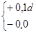
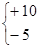
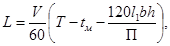
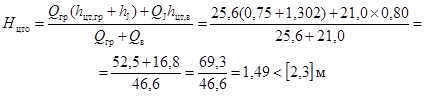
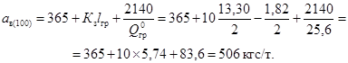
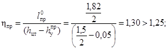
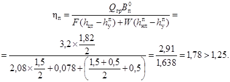
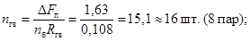
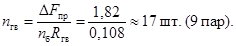

МИНИСТЕРСТВО ТРАНСПОРТНОГО СТРОИТЕЛЬСТВА
ИНСТРУКЦИЯ
НА ИЗГОТОВЛЕНИЕ,
СТРОИТЕЛЬСТВО И ЗАСЫПКУ
СБОРНЫХ БЕТОННЫХ
И ЖЕЛЕЗОБЕТОННЫХ
ВОДОПРОПУСКНЫХ ТРУБ
ВСН 81-80
Минтрансстрой
Утверждена 4 октября 1980 г.
Согласована Госстроем СССР. Письмо Госстроя
СССР от 8 августа 1980 г. № HK-4002-1
МОСКВА 1981
«Инструкция на изготовление, строительство и засыпку сборных бетонных и железобетонных водопропускных труб» (ВСН 81-80) разработана коллективом сотрудников Всесоюзного научно-исследовательского института транспортного строительства (ЦНИИС) и его Новосибирского филиала (СибЦНИИС) взамен «Технических указаний по изготовлению и постройке сборных железобетонных водопропускных труб» (ВСН 81-62).
Основные цели и задачи, поставленные при переработке действующих технических указаний (ВСН 81-62), заключались в уточнении технологии изготовления и строительства труб, увязке с действующими общесоюзными нормативными документами (СНиП, СН и ГОСТами), унификации существующих и разработке дополнительных требований к изготовлению бетонных и железобетонных конструкций сборных водопропускных труб и их строительству (включая засыпку грунтом насыпи), выполнение которых должно привести к повышению качества, сокращению сроков и снижению стоимости строительства, а также к обеспечению требований долговечности.
Руководитель работы - канд. техн. наук П.М. Зелевич.
Авторы Инструкции: кандидаты техн. наук П.М. Зелевич, К.В. Николаи, Р.Е. Подвальный, А.С. Потапов, В.П. Чернавский и инженеры Е.А. Антонов, П.Д. Стрельников.
В уточнении отдельных положений Инструкции участвовали кандидаты техн. наук Э.А. Балючик, А.И. Бутор, В.А. Зубков и В.П. Каменцев.
В Инструкции учтены предложения инженеров О.Е. Желтова (ГУЖВ), В.В. Гольшуха (Минтрансстрой), Ф.Г. Карманова (Сибгипротранс), Р.С. Клейнера (Ленгипротрансмост), С.М. Трифонова (Главмостострой) и канд. техн. наук Е.В. Палагипа (СКБ Главстройпрома), данные в отзывах по тексту ВСН 81-62 и первой редакции этой работы.
Зам. директора института Г.Д. ХАСХАЧИХ
Заведующий отделением искусственных сооружений К.С. СИЛИН
|
Министерство транспортного строительства |
Ведомственные строительные нормы |
ВСН 81-80 Минтрансстрой |
|
Инструкция на изготовление, строительство и засыпку сборных бетонных и железобетонных водопропускных труб |
Взамен «Технических указаний по изготовлению и постройке сборных железобетонных водопропускных труб» (ВСН 81-62) |
|
Внесена Всесоюзным научно-исследовательским институтом транспортного строительства (ЦНИИС) |
Утверждена 4 октября 1980 г. |
Срок введения в действие с 1 февраля 1981 г. |
1.1. Инструкция предназначена для использования проектными и строительными организациями Министерства транспортного строительства, осуществляющими составление проектов производства работ, изготовление из тяжелого бетона элементов бетонных и железобетонных труб, а также строительство водопропускных труб под насыпи автомобильных и железных дорог (в том числе вторых путей) во всех строительно-климатических зонах.
При выполнении всех видов работ, предусмотренных Инструкцией, должны соблюдаться требования нормативных документов, утвержденных Госстроем СССР или согласованных с ним, а также требования государственных стандартов.
1.2. Строительство труб под насыпи железных и автомобильных дорог должно осуществляться индустриальными методами по рабочим чертежам, составленным на основе действующих типовых проектов.
Все строительно-монтажные работы должны быть максимально механизированы.
Сооружение труб должно планироваться в составе проекта организации всего комплекса работ, включающего возведение земляного полотна, укладку пути и обеспечивающего непрерывность и своевременность технологического процесса по строительству дороги.
Работы должны выполняться по типовому или специальному проекту производства работ.
1.3. Для труб, строительство которых по календарному графику планируется в зимний период, до наступления морозов следует предусматривать выполнение подготовительных работ, включающих:
восстановление и закрепление репера, продольной оси трубы и ее пересечения с осью трассы;
установку у геодезических знаков сторожков - вешек, высота которых принимается выше ожидаемого уровня снежного покрова;
предохранение грунта от промерзания путем:
сохранения мохового покрова или покрытия поверхности грунта теплоизоляционными материалами;
выполнения мероприятий по снегозадержанию;
предварительного рыхления грунта до начала промерзания (вспахиванием, боронованием, «перелопачиванием» экскаватором);
засоления.
1.4. Изменения в рабочие чертежи водопропускных труб, необходимость в чем может возникнуть в процессе производства работ, а иногда и до начала работ при ознакомлении с местными условиями, допускается вносить только заказчику по согласованию с проектной организацией.
Изменения в чертежах основных элементов (звеньев, блоков оголовков и др.) типовых конструкций должны быть согласованы с проектной организацией-разработчиком.
1.5. За постройкой бетонных и железобетонных труб должен осуществляться авторский надзор согласно «Положению об авторском надзоре проектных организаций за строительством предприятий, зданий и сооружений», утвержденному Госстроем СССР.
2.1. В бетонных смесях согласно СНиП III-43-75 следует применять:
в качестве вяжущих - цементы, перечисленные в п. 4.22;
в качестве крупного заполнителя - щебень и гравий, перечисленные в п. 4.23;
в качестве мелкого заполнителя - песок, согласно п. 4.24;
в качестве добавок, улучшающих качество бетонной смеси, в том числе по морозостойкости, - перечисленные в п. 4.26.
Для промывки заполнителей, затворения бетонной смеси и поливки бетона допускается использовать природную воду, согласно п. 4.27 СНиП III-43-75.
2.2. Марки арматурных сталей должны соответствовать установленным в проекте и указанным в заказе на изготовление звеньев.
2.3. Арматурные стали должны удовлетворять требованиям государственных стандартов, а также технических условий, утвержденных в установленном порядке.
2.4. Механические свойства сталей, применяемых для армирования изделий, должны быть проверены в соответствии с указаниями ГОСТ 12004-66.
2.5. Оценку качества арматурных изделий следует производить по рабочим чертежам звеньев труб. При этом проверке подлежат при массе арматуры в звене:
300 кг и более - арматурные изделия каждого звена;
менее 300 до 100 кг - 50 % арматурных изделий звеньев, изготовленных в одну смену;
менее 100 кг - 25 % арматурных изделий звеньев, изготовленных в одну смену.
2.6. Удобоукладываемость бетонной смеси, характеризуемая подвижностью (осадкой конуса в сантиметрах) и жесткостью (временем вибрации в секундах) в зависимости от вида элементов и способа уплотнения бетона, должна назначаться по результатам подбора заводской бетонной лаборатории с учетом требований табл. 1.
Таблица 1
|
Способ уплотнения |
Осадка конуса, см |
Жесткость бетонной смеси, с |
|
|
Неармированные блоки фундаментов в опалубке |
Глубинные и площадочные вибраторы |
2 - 4 |
20 - 15 |
|
Звенья в виброформах |
Вибросердечник |
0 - 1 |
30 - 25 |
|
Звенья в опалубке |
Глубинные вибраторы |
4 - 6 |
15 - 12 |
|
Железобетонные блоки оголовков в опалубке |
Глубинные вибраторы |
4 - 6 |
15 - 12 |
|
То же |
Наружные (бортовые) вибраторы |
2 - 4 |
20 - 15 |
При формовании конструкций на виброплощадках, в том числе с крутильными колебаниями, жесткость бетонной смеси, измеренная на месте укладки техническим вискозиметром, должна находиться в пределах от 40 до 60 с.
2.7. Определение подвижности и жесткости бетонной смеси производится в соответствии с указаниями ГОСТ 10181-76.
При оптимальной подвижности и жесткости бетонной смеси не возникает ее расслоения, цементный раствор не скапливается на поверхности уплотняемого слоя, а в процессе уплотнения выделяются воздушные пузырьки. Появление через 1 - 1,5 мин уплотнения избытка цементного раствора свидетельствует об излишней, а прекращение выделения воздушных пузырьков - о недостаточной подвижности (или чрезмерной жесткости) бетонной смеси.
Величину начальной подвижности бетонной смеси следует назначать с учетом уменьшения ее при транспортировании.
2.8. Водоцементное отношение в бетонной смеси и расход цемента на 1 м3 бетона должны соответствовать указаниям пп. 4.28 и 4.29 СНиП III-43-75 и проекту.
3.1. Технологический процесс изготовления сборных конструкций должен быть разработан с учетом поточной организации производства и обеспечения надлежащего качества работ при высокой производительности труда. Все процессы изготовления элементов должны быть максимально механизированы.
3.2. Сварные арматурные изделия должны удовлетворять требованиям ГОСТ 10922-75.
3.3. Нижние концы распределительных стержней арматуры звеньев должны быть строго выровнены с тем, чтобы при установке каркасов обеспечивалось их проектное положение по высоте относительно опалубки.
3.4. Хомуты должны быть надежно скреплены с огибаемыми ими стержнями. При загибе концов хомутов должно быть обеспечено устройство полукруглого крюка.
3.5. Строповочные петли, если они предусмотрены проектом, должны быть установлены по шаблону и прикреплены вязальной проволокой к арматуре звена. Расстояние «в» между отогнутыми ветвями петель (рис. 1) должно быть одинаковым с расстоянием между осями внутренней и наружной арматуры стенки звена.
При применении съемного пригруза следует принимать меры по предупреждению смещения петель.
При отсутствии указаний в проекте минимальная длина запуска концов ветвей монтажных петель в бетон при прочности бетона в момент подъема изделия 100 - 200 кгс/см2 должна быть не менее 30d, при 300 кгс/см2 и выше - не менее 25d, где d - диаметр арматурного стержня (см. рис. 1). Подъем изделия за петли при прочности бетона менее 100 кгс/см2 не допускается.
Рис. 1. Строповочная петля:
1 - поверхность бетона; в - расстояние между осями внутренней и наружной арматуры звена
3.6. Диаметр оправки (Дп), применяемой для загиба петель, должен быть равным 60 мм + d - для стержней диаметром (d) 10 - 18 мм; 80 мм + d - для стержней диаметром 20 - 22 мм и 150 мм + d - для стержней диаметром 25 - 32 мм.
3.7. Каркасы должны быть жесткими, т.е. не допускать возникновения видимых деформаций при транспортировке и установке, а также при формовании блоков.
При подъеме каркасов кранами следует применять траверсы.
3.8. К каждому заготовленному и проверенному ОТК или заводской инспекцией каркасу должна прикрепляться бирка, с указанием порядкового номера.
3.9. Сталь, получаемую в виде мотков и используемую в качестве рабочей спиральной арматуры, допускается предварительно не выпрямлять.
3.10. Во всех случаях стыкования стержней, используемых в качестве рабочей арматуры, следует применять контактную сварку. При машинной намотке спиральной арматуры применение контактной сварки стыков является обязательным. При этом стыки должны быть зачищены заподлицо с внешним поперечным очертанием стержня.
3.11. Сварные соединения (стыковые, крестообразные, тавровые и нахлесточные) и технология сварки арматурных стержней принимаются в соответствии с требованиями ГОСТ 10922-75 «Арматурные изделия и закладные детали сварные для железобетонных конструкций» и «Указаний по сварке соединений арматуры и закладных деталей железобетонных конструкций» СН 393-69.
Сварка в нахлестку (стыкование) стержней рабочей арматуры не допускается.
3.12. Распределительные стержни должны быть прикреплены к спиралям рабочей арматуры контактной точечной сваркой.
3.13. Каркасы стенок и ригелей прямоугольных звеньев вяжут из заготовленных сеток.
3.14. При изготовлении звеньев в заводских условиях рекомендуется заготовку сеток производить с применением специальных станков для точечной контактной сварки пересечений стержней.
3.15. Полную сборку каркасов производят с использованием кондуктора.
Наружные стороны каркасов сваривают клещами МТПП-75, внутренние стороны связывают проволокой.
3.16. Конструкция опалубки и мероприятия по подготовке ее к бетонированию должны удовлетворять требованиям проекта и пп. 4.2, 4.3 главы СНиП III-43-75, а также нижеследующим указаниям.
3.17. Монтажные соединения у металлической опалубки следует делать с применением металлических клиньев или натяжных замков. Толщина полок у окаймляющих опалубку уголков в стыках должна быть не менее 8 мм.
Металлические монтажные соединения деревянной опалубки должны осуществляться на клиньях.
3.18. Сварные швы металлических форм на поверхностях, обращенных к бетону, должны быть хорошо проварены и зачищены; заусеницы и наплывы металла не допускаются.
3.19. Стыки форм в собранном виде должны быть плотными и не пропускать раствора.
3.20. Для обеспечения плавного отрыва наружной опалубки при распалубке необходимо применять в фланцевых стыках опалубки нажимные болты, располагаемые через 40 - 50 см друг от друга.
3.21. Для удлинения срока службы деревянных форм рекомендуется обшивать поверхности, соприкасающиеся с бетоном, тонколистовой сталью. Сталь (обшивка) должна прибиваться гвоздями к щиту опалубки так, чтобы не было ее выпучивания. По периметру щита обшивка должна быть загнута и прикреплена гвоздями.
3.22. Для возможности выдачи бетонной смеси из бадьи или бункера непосредственно в вертикальные стенки формуемых железобетонных блоков их опалубка должна иметь съемные наклонные направляющие щитки (козырьки), установленные на наружной и внутренней опалубке.
В виброформах звеньев внутренние козырьки не устраивают.
3.23. Опалубка должна устанавливаться на поддонах на тщательно выверенной горизонтальной площадке, предварительно очищенной от мусора и наплывов цементного раствора.
На полигонах площадка устраивается в виде плаза или выровненной бетонной подготовки с желобами для отвода воды. При формовании в пропарочной камере наклонное дно ее должно иметь канавки для стока воды.
3.24. Арматурные каркасы должны устанавливаться в опалубку, как правило, непосредственно перед формованием. Перед установкой каркаса опалубка должна быть очищена от мусора, а сами каркасы - от ржавчины и загрязнений.
3.25. Формы после каждого цикла бетонирования должны быть тщательно очищены снаружи от бетона, а после распалубки - тщательно очищены изнутри от частиц раствора и смазки.
3.26. Каждый комплект инвентарной опалубки должен иметь присвоенный ему номер по заводу или полигону. Указанный номер наносится краской на каждом элементе опалубки.
3.27. При формовании звеньев виброформы должны устанавливаться на металлических или деревянных поддонах, допускающих перемещение краном отформованного звена вместе с поддоном. Во всех случаях должно быть обеспечено плотное опирание наружной опалубки и сердечника на поддон во избежание вытекания раствора из бетонной смеси при вибрировании. Наружная опалубка должна иметь съемное закрепление к поддону.
3.28. Расстояние между сердечником (внутренней опалубкой) и наружной опалубкой, необходимое для обеспечения проектной толщины стенок звеньев, обеспечивается горизонтальными фиксаторами. При этом применение постоянно приваренных к наружной опалубке верхних фиксаторов не рекомендуется: из-за невозможности установки арматурных каркасов без полной разборки наружной опалубки; из-за невозможности применения кругового пригруза при формовании; вследствие затруднительности затирки верхней торцевой поверхности звеньев после формования.
Рекомендуется применение верхнего накидного фиксатора для круглых виброформ.
Количество фиксаторов должно быть не менее:
для виброформ круглых звеньев - внизу 3 шт., вверху 6 шт. (с равномерной установкой их по периметру);
для виброформ прямоугольных звеньев - внизу 4 шт. (по одному посередине каждой стороны виброформы), вверху 6 шт. (по одному посередине коротких сторон и по два, равномерно установленных на каждой длинной стороне).
Для каждого отверстия нижних фиксаторов должны быть заготовлены пробки, плотно закрывающие отверстия в наружной опалубке. Концы пробок должны располагаться заподлицо с внутренней поверхностью опалубки.
3.29. Для обеспечения толщины защитного слоя при формовании звеньев длиной не более 2 м следует применять съемные стержни-фиксаторы, устанавливаемые между опалубкой и рабочей арматурой. Стержни-фиксаторы должны на 10 - 15 см выступать над опалубкой. Нижний конец стержней должен быть заострен, а верхний загнут по кругу и заварен. Съемные фиксаторы извлекают по мере подъема вверх вибросердечника.
Количество съемных стержней-фиксаторов должно быть не менее:
четырех - для круглых звеньев (устанавливаются только между сердечником и внутренней арматурой);
десяти - для прямоугольных звеньев (устанавливаются как с внутренней, так и с наружной стороны каркаса).
Для возможности установки стержней-фиксаторов между сердечником и внутренней арматурой в колпаке сердечника устраиваются вырезы.
При формовании звеньев длиной более 2 м и применении одиночных арматурных каркасов должны приниматься специальные меры (в соответствии с указаниями проекта и принятой технологией формования элементов) по фиксации каркаса в опалубке строго в проектном положении.
3.30. При применении виброформ надлежит руководствоваться следующим:
а) сердечник формы должен быть оборудован шланговым, желательно бронированным, проводом длиной не менее 10 м для подключения вибромеханизма к распределительному щиту. Корпус мотора вибратора должен быть заземлен;
б) вибросердечники форм должны не реже 1 раза в сутки проходить профилактический осмотр и раз в неделю профилактический ремонт (смазка подшипников, осмотр и подтяжка креплений, проверка электромотора, шлангового провода и т.п.);
в) перед каждой установкой сердечника в форму необходимо проверять исправность вибромеханизма включением его в работу на 5 - 10 с.
3.31. Порядок подготовки виброформ к бетонированию должен быть следующий:
а) на поддоне в собранном виде устанавливают наружную опалубку;
б) устанавливают и фиксируют арматурный каркас так, чтобы был обеспечен равномерный защитный слой по наружному периметру;
в) устанавливают сердечник. При положении низа сердечника на расстоянии 1 - 2 см от поддона между сердечником и внутренней арматурой каркаса устанавливают вертикальные фиксирующие стержни и запирают нижние горизонтальные фиксаторы. Диаметр фиксирующих стержней назначается с учетом допусков;
г) сердечник опускают на поддон;
д) закрывают верхние фиксаторы.
3.32. Виброопалубку следует применять для изготовления прямоугольных звеньев длиной более 1 м, а также для изготовления круглых звеньев длиной более 1 м при отсутствии возможности изготовления их на специальных формующих установках.
3.33. Сердечник (внутреннюю опалубку) следует делать для круглых звеньев с разрезом по образующей, а для прямоугольных - разъемного типа.
Для возможности извлечения сердечника в его конструкции должны быть предусмотрены приспособления для раскружаливания.
3.34. Толщину защитного слоя при длине звеньев более 2 м обеспечивают, применяя прокладки, прикрепляемые к арматуре.
3.35. Дозирование цемента и заполнителей должно производиться только по массе; дозирование воды и растворов добавок допускается по объему. Точность дозирования составляющих материалов для бетонной смеси на один замес бетоносмесителя должна быть не ниже:
цемента, воды и растворов добавок....................................... ±2 %
каждой фракции заполнителей.............................................. ±3 %
Концентрированный раствор добавки (или комплекса добавок) следует вводить в смеситель одновременно с подачей воды.
3.36. Бетонную смесь следует приготавливать в смесителях принудительного перемешивания. Приготовление пластичных смесей допускается производить в гравитационных смесителях (свободного падения).
Продолжительность перемешивания составляющих бетонной смеси (считая от начала перемешивания после загрузки всех составляющих до начала выгрузки смеси после остановки смесителя) должна быть не менее, мин:
В гравитационных смесителях:
при емкости менее 300 л..................................................... 1,5
при емкости от 300 до 1000 л............................................. 2
при емкости более 1000 л................................................... 2,5
В бетоносмесителях принудительного перемешивания..... 2
Продолжительность перемешивания бетонных смесей с воздухововлекающими добавками должна соблюдаться строго, так как изменение времени перемешивания отражается на количестве вовлеченного воздуха в смеси. При этом воздухосодержание бетонной смеси необходимо систематически контролировать.
3.37. Подвижность или жесткость бетонной смеси на месте приготовления следует проверять не реже 1 раза в смену, а также при каждом изменении состава бетона.
Подвижность не должна отличаться от заданной более чем на 1 см осадки конуса, а жесткость - более чем на 10 с. При большем отклонении удобоукладываемости необходимо проводить корректировку производственного состава бетона.
3.38. Бетонную смесь к месту укладки следует транспортировать в бункерах-раздатчиках или бадьях, оборудованных затворами, а при необходимости и вибраторами. Тара должна обеспечивать возможность регулирования скорости опорожнения и исключать зависание смеси, а также потери цементного раствора.
При перевозках в условиях открытой площадки бетонная смесь должна быть защищена от попадания атмосферных осадков и воздействия солнечных лучей.
3.39. Работы по бетонированию конструкций необходимо выполнять в закрытых, отапливаемых в зимнее время помещениях.
Бетонирование на открытых площадках разрешается при положительных температурах воздуха, когда нет опасности замерзания бетонной смеси в процессе транспортирования и укладки, а также в период набора бетоном требуемой прочности.
3.40. Перед укладкой бетонной смеси должны быть тщательно проверены:
правильность сборки опалубки, герметичность сопряжений всех ее элементов и надежность уплотнений; достаточность смазки формующих поверхностей (кроме форм с немедленной распалубкой);
надежность закрепления узлов технологической оснастки, подверженных динамическим воздействиям;
соответствие расположения и закрепления арматурного каркаса, закладных деталей и фиксаторов положения арматуры требованиям проекта;
работоспособность вибрационного оборудования;
подготовленность всех механизмов, приспособлений, инструмента и рабочего места.
3.41. При изготовлении звеньев и других элементов труб с немедленной распалубкой необходимо обеспечивать свободное - без напряжений и упругих деформаций - размещение всех элементов каркаса по отношению к внутренней и наружной опалубке. Так же свободно должны располагаться в форме фиксаторы и прокладки, гарантирующие толщину защитного слоя бетона и проектное положение арматуры.
3.42. Укладку бетонной смеси в форму (опалубку) производят бетоноукладчиком или непосредственно бункером-раздатчиком или бадьей, оборудованной затвором.
3.43. Укладку и уплотнение бетонной смеси следует производить послойно, толщиной слоя 25 - 40 см по всей площади изготавливаемой конструкции.
Признаком окончания уплотнения бетонной смеси в каждом слое является прекращение ее оседания и интенсивного выделения пузырьков воздуха с появлением на поверхности характерного блеска цементного теста.
3.44. Укладку бетонной смеси в опалубку при изготовлении звеньев труб на виброплощадках, в виброформах с вибросердечником или с навесными бортовыми вибраторами (или одновременно с вибросердечником и бортовыми вибраторами) производят при включенных вибромеханизмах. Интенсивность подачи бетонной смеси из бункера должна соответствовать интенсивности ее прохождения в форму, т.е. без накопления на колпаке вибросердечника и направляющих щитках опалубки.
Для ускорения прохождения бетонной смеси в форму следует использовать шуровки из древесины плотных пород.
3.45. После заполнения формы не менее чем на половину ее высоты удаляются нижние горизонтальные фиксаторы, а отверстия в наружной опалубке закрываются пробками.
После полного заполнения формы с некоторым избытком и вибрирования в течение 20 - 30 с удаляют все вертикальные фиксирующие стержни, установленные между опалубкой и арматурой, и снимают накидные фиксаторы. Продолжительность последующего вибрирования (вновь включаются механизм вибросердечника и все навесные бортовые вибраторы) определяется сроком проработки верхнего слоя бетонной смеси в форме, вибрируемой со съемным пригрузом (интенсивностью 30 - 50 гс/см2).
Когда заплечики пригруза начнут касаться верхней кромки наружной опалубки, вибромеханизмы выключают, снимают пригруз и делают затирку верхнего торца звена заподлицо с кромкой наружной опалубки.
3.46. При обнаружении в процессе бетонирования расслоения бетона, отделения на поверхности цементного раствора или скопления щебня состав бетона должен быть откорректирован.
3.47. Для предохранения свежеуложенного бетона от потерь воды после окончания бетонирования необходимо выполнять влагоизоляцию открытых поверхностей бетона способом, назначаемым проектом производства работ.
3.48. Распалубку элементов, изготовленных в сборно-разборной опалубке и не подвергающихся пропариванию, следует производить при достижении бетоном прочности на сжатие не менее 25 кгс/см2.
3.49. Распалубку звеньев, изготавливаемых в виброформах с вибросердечником или с навесными бортовыми вибраторами, допускается производить немедленно после окончания формования элемента.
3.50. При немедленной распалубке вначале извлекают краном вибросердечник; для облегчения отрыва сердечника в начальный момент подъема допускается импульсное включение вибромеханизма.
Для съема наружной опалубки круглых звеньев труб разъединяют один стык и ослабляют на один оборот болтовые соединения второго стыка; нажимными болтами зазор между стыковыми уголками доводят до 1 - 1,5 см по всей длине стыка; стропуют опалубку в четырех точках и поднимают краном, строго следя за центрировкой крюка крана над формой.
Опалубку прямоугольных звеньев труб также следует снимать краном, для чего разъединяют все угловые стыки опалубки и каждый щит снимают отдельно, стропуя за две точки и следя за вертикальностью перемещения щита при подъеме.
3.51. Раковины и каверны с обнажением арматуры, сплывы бетона и осадка стенок, свидетельствующие о нарушениях в составе бетона и в удобоукладываемости бетонной смеси, трещины на внутренней и наружной поверхностях бетона звена, вызванные упругими деформациями арматурного каркаса после снятия опалубки или повреждением свежеуложенного бетона при распалубке, а также отвалы поверхностного слоя бетона исправлению и затирке раствором не подлежат. Звенья, имеющие указанные дефекты бетона, должны быть отбракованы.
3.52. Режим тепловлажностной обработки, назначаемый бетонной лабораторией и уточняемый опытным путем, должен гарантировать получение бетоном требуемой прочности на различных технологических этапах, достижение проектной прочности, морозостойкости и водонепроницаемости бетона в заданном возрасте и исключать причины возникновения технологических трещин в изготавливаемых конструкциях.
3.53. Тепловлажностную обработку бетона отформованных элементов конструкций водопропускных труб следует производить пропариванием по мягкому режиму в пропарочных камерах, прогревом в обогреваемых формах (опалубках) или экзотермическим способом (без применения пропаривания) за счет использования тепла, выделяемого бетонной смесью в процессе твердения.
При обработке элементов труб в пропарочных камерах насыщенным паром низкого давления относительная влажность окружающей среды должна быть не ниже 98 %. Рекомендуется на всех стадиях прогрева и охлаждения конструкций поверхности бетона орошать водой, температура которой па каждом этапе соответствует заданной температуре среды.
3.54. Стационарные пропарочные камеры рекомендуется оснащать устройствами для автоматического регулирования подачи пара и для принудительного перемешивания паровоздушной среды в камере на всех стадиях обработки.
При тепловлажностной обработке в обогреваемых формах (с водяным, масляным, электрическим или паровым обогревом) должно быть обеспечено соблюдение заданного температурного режима во всех сечениях бетона конструкции.
Открытые поверхности бетона следует защищать от потерь тепла и влаги укладкой тепловлагоизоляционных покрытий.
3.55. Перед тепловлажностной обработкой отформованные конструкции должны быть выдержаны в течение срока, достаточного для набора начальной прочности бетона не менее 5 кгс/см2. Определение начальной прочности бетона следует производить испытанием на сжатие образцов-кубов с ребром не менее 10 см на прессе грузоподъемностью не более 5 т.
3.56. Режим тепловлажностной обработки должен назначаться с учетом указаний проекта, особенностей изготовляемой конструкции, применяемой оснастки, используемых для бетона материалов и местных условий производства согласно п. 4.40 СНиП III-43-75. При этом:
для конструкций, предназначенных для применения в обычных условиях (при расчетной температуре наружного воздуха выше минус 40 °С) скорость подъема температуры среды в камере или в обогреваемой опалубке должна быть не более 10 °С в час, а для конструкций, предназначенных для применения в особых условиях (при расчетной температуре наружного воздуха ниже минус 40 °С), - не более 5 °С;
температура изотермического прогрева конструкций звеньев для применения в обычных условиях не должна превышать +70 °С, а для конструкций звеньев в особых условиях +60 °С;
скорость снижения температуры среды для конструкций звеньев в обычных условиях должна быть не более 10 °С в час, а для конструкций звеньев в особых условиях 5 °С в час.
3.57. Вентиляция камер для охлаждения находящихся в них конструкций звеньев или принудительная циркуляция воздуха с целью выравнивания температуры среды допускается только при одновременном увлажнении открытых поверхностей бетона.
3.58. Извлечение конструкций из пропарочной камеры или из обогреваемой опалубки после остывания допускается при условии, что температура поверхностного слоя бетона не превышает температуры окружающего воздуха в цехе более чем на 20 °С.
3.59. При выдаче готовых блоков из цеха на открытый склад или на транспортные средства для отправки заказчику температура бетона конструкций не должна превышать температуры наружного воздуха более чем на 20 °С.
3.60. После окончания тепловой обработки блоков конструкций, предназначенных для эксплуатации в особых условиях, изготовленных из бетонной смеси без комплексной добавки, они должны выдерживаться при положительной температуре во влажной среде в течение срока, устанавливаемого заводской лабораторией из условия обеспечения проектной морозостойкости бетона.
3.61. Открытые поверхности конструкций труб после приемки их заводской инспекцией следует покрывать пленкообразующими материалами, окрашивать полимерцементными красками, водными растворами кремнийорганических жидкостей или другими материалами, которые способны защищать поверхность бетона от потерь влаги.
При передаче на склад конструкций без устройства защитных покрытий поверхностей их следует выдерживать в увлажненном состоянии (поливкой водой, укрытием периодически увлажняемыми материалами или полимерными пленками) в продолжении 14 суток. При температуре воздуха ниже +5 °С поливку бетона водой производить не следует.
3.62. Срок выдержки конструкций на складе (п. 5.2), зависящий от требуемой проектом прочности бетона на момент отгрузки, следует определять на основании испытания контрольных образцов, хранящихся вместе с конструкциями.
3.63. Изготовление элементов конструкций водопропускных труб экзотермическим способом (без применения пропаривания) осуществляется по специальным указаниям.
4.1. Допуски в размерах длин отдельных стержней стальной арматуры и собранных арматурных каркасов не должны превышать:
Отдельных стержней
По отклонению в длинах отдельных стержней на 1 м, мм............... ±2
То же на всю длину стержня, мм.......................................................... ±10
По отклонению в положении мест отгиба стержней, мм.................. ±30
По смещению осей стержней в стыках, выполненных
контактной сваркой............................................................................... ±0,1d
По отклонению в размерах крюков..................................................... 
Примечание. d - диаметр стержня.
Собранных каркасов
По расстояниям между смежными стержнями рабочей
арматуры в ряду при условии сохранения их общего
количества на 1 м и на всю длину, мм..................................................... +5; -10
По расстоянию между рядами рабочей арматуры, мм....................... ±5
По расстоянию между хомутами в вязаных каркасах, мм................. ±15
То же в сварных каркасах, мм............................................................... ±10
По остальным наружным размерам, мм.............................................. ±10
4.2. Толщина защитного слоя бетона должна быть:
До внешней поверхности рабочей арматуры не менее, мм............... 20
До внешней поверхности хомутов и не расчетной арматуры:......... 20
не менее, мм........................................................................................ 15
и не более, мм..................................................................................... 40
4.3. Толщина защитного слоя бетона для продольной арматуры в торцах звеньев и блоков должна быть не менее 15 мм.
4.4. Отклонение толщины защитного слоя бетона от проектной, независимо от отклонений геометрических размеров звеньев, элементов оголовков и плит перекрытий труб, не должно превышать:
Для звеньев и блоков с толщиной стенки (плиты) до 400 мм, мм.... ±5
То же более 400 мм, мм.......................................................................... 
4.5. Допуски в размерах опалубки не должны превышать величин, указанных в табл. 2.
Таблица 2
|
Значения, мм |
||
|
для опалубки звеньев |
для опалубки остальных блоков |
|
|
Элементы опалубки |
||
|
Отклонения по длине и ширине щитов |
0,04h, но не более 7 мм |
±7 |
|
Разность диагоналей |
0,05h, но не более 9 мм |
±9 |
|
Отклонение диаметров (размеры стороны) сердечника от проектной величины |
0,04h, но не более 7 мм |
- |
|
Неперпендикулярность основания сердечника к его вертикальной оси |
Не допускается |
- |
|
Отклонение кромок щитов от прямой линии (вдоль и поперек щита) |
±1 |
±1 |
|
Отклонение обшивки из плоскости щита, кроме случаев, предусмотренных следующим пунктом данной таблицы |
±3 |
±5 |
|
Прогиб и выпучивание обшивки сердечника виброформы |
±1 |
- |
|
Несовпадение отверстий в стыках для соединительных элементов |
±0,5 |
±1 |
|
Отклонение положения центра серьги сердечника от его вертикальной оси |
±5 |
- |
|
Опалубка в собранном виде |
||
|
Разность диагоналей и опалубки прямоугольных блоков |
±8 |
±10 |
|
Отклонение любого диаметра наружной опалубки звеньев от проектной величины |
0,04h, но не более 7 мм |
- |
|
Отклонение расстояния между наружной опалубкой и сердечником (внутренней опалубкой) от проектной толщины стенок (для виброформ измеряется по верху опалубки) |
То же |
- |
|
Зазоры в стыках щитов опалубки |
±0,5 |
±1 |
Примечание. h - толщина стенок.
4.6. Допускаемые отклонения от проектных размеров готовых звеньев, элементов оголовков и плит перекрытий не должны превышать, мм:
По длине................................................................................... +5; -10
По толщине стенок.................................................................. +10; -5
По внутреннему отверстию.................................................... ±10
Для звеньев труб, изготавливаемых в формах с внутренним коническим (пирамидальным) вкладышем, допуск по толщине стенки относится к верхнему (во время формования) торцу звена.
4.7. Допускаемые отклонения от проектных размеров блоков фундаментов не должны превышать, мм:
По толщине............................................................................... ±5
По длине и шириной............................................................... ±10
4.8. Звенья труб должны иметь по всей длине правильную форму. Искривление поверхности круглых звеньев, измеряемое по образующей, не должно превышать 5 мм на 1 м длины звена.
4.9. Искривление лицевой поверхности (неплоскостность) звеньев прямоугольных труб и других элементов с плоскими поверхностями плоскостей не должно превышать 0,005 наибольшего размера стороны элемента.
4.10. Торцевые плоскости звена должны быть перпендикулярны к их продольной оси. Допускается перекос торцевой плоскости звена не более 5 мм.
5.1. Отформованные элементы труб ко времени выдачи на склад должны иметь прочность (в процентах от проектной марки бетона по прочности на сжатие) не менее указанных в табл. 3.
Таблица 3
|
Минимальная прочность бетона (в процентах от проектной марки бетона по прочности на сжатие) ко времени выдачи элемента на склад |
||
|
при положительной температуре воздуха на складе |
при отрицательной температуре воздуха на складе (замораживание элемента) |
|
|
Звенья и железобетонные плиты перекрытий |
70 |
100 |
|
Железобетонные блоки фундаментов |
70 |
80 |
|
Блоки оголовков |
70 |
80 |
|
Бетонные блоки фундаментов |
50 |
70 |
5.2. Прочность бетона элементов, определяемая по результатам контрольных испытаний образцов в соответствии с требованиями пп. 4.51 - 4.53 главы СНиП III-43-75, ко времени отгрузки конструкций со склада предприятия-изготовителя к месту монтажа должна быть не ниже значений, указанных в табл. 3, и не ниже требуемой проектом для расчетной нагрузки при перевозке элементов, монтаже и засыпке труб.
Величина отпускной прочности бетона звеньев труб, предназначенных для эксплуатации в районах с расчетной температурой наружного воздуха ниже минус 40 °С, должна быть, не менее прочности бетона, соответствующей проектной марке бетона по прочности на сжатие.
6.1. Качество материалов, применяемых при изготовлении элементов труб, и качество изделий должны соответствовать требованиям действующих стандартов, технических условий, главы СНиП III-43-75 и дополнительным требованиям настоящей Инструкции.
Составы бетонных смесей для применения в конструкциях водопропускных труб должны отвечать требованиям п. 4.31 СНиП III-43-75.
Проверка бетона на истираемость не производится.
6.2. Испытания бетона элементов труб на водонепроницаемость и морозостойкость должны проводиться (перед утверждением состава бетона для изготовления конструкций труб, а затем не реже чем через каждые шесть месяцев) на образцах, изготовленных с использованием цемента, заполнителей, воды, составов бетона при соблюдении режимов тепловлажностной обработки при твердении, которые будут применяться при формовании и выдержке элементов на данном предприятии.
6.3. Проверка на морозостойкость должна производиться по ГОСТ 10060-76. Водонепроницаемость бетона следует проверять по ГОСТ 12730.0-78 - ГОСТ 12730.5-78.
6.4. Контроль качества арматурных каркасов и установленных в п. 4.1 настоящей Инструкции допусков должен обеспечиваться:
проверкой общего состояния и основных размеров инвентарных приспособлений (кондукторов, барабанов и пр.), влияющих на точность изготовления каркасов;
проверкой готовых каркасов (соответствия размеров каркаса, диаметров и вида примененных стержней и их взаимного расположения требованиям проекта), качества соединений стержней, отсутствия загрязнения каркасов;
осмотром каркасов перед установкой их в опалубку (отсутствие деформаций и загрязнения; наличие и расположение бетонных прокладок, прикрепленных к арматуре для обеспечения требуемой толщины защитного слоя);
осмотром каркасов, установленных в опалубке (обеспечение проектного расположения каркаса в опалубке по высоте и проектной толщины защитного слоя).
Все обнаруженные отклонения от проекта и от установленных допусков изготовления каркасов должны быть устранены до начала бетонирования.
6.5. Контроль качества опалубки с учетом допусков, приведенных в п. 4.5 настоящей Инструкции, должен обеспечиваться осмотром внешнего вида опалубки и проверкой ее размеров (фактических отклонений в размерах отдельных щитов и опалубки в собранном виде), а также проверкой плотности соединений щитов опалубки. Опалубку осматривают и проверяют при приемке после изготовления и затем один раз в месяц, с составлением акта.
Непосредственно перед формованием каждого элемента контролируется: отсутствие загрязнения опалубки; смазка поверхностей опалубки, соприкасающихся с бетоном; плотность монтажных соединений; равенство длин диагоналей для опалубок прямоугольной формы; расстояния между внутренней и наружной опалубкой (толщины элемента) для опалубки звеньев.
Все замеченные неисправности и отклонения от размеров, превышающие установленные допуски, должны быть устранены.
6.6. Все изготовленные элементы до отправки их на склад должны быть освидетельствованы и приняты ОТК предприятия-изготовителя или заводской инспекцией.
Результаты приемочного контроля должны быть записаны в журналах ОТК или заводской инспекции. Конструкции труб, поставляемые потребителю, должны иметь штамп ОТК предприятия-изготовителя или штамп заводской инспекции.
6.7. Приемка должна установить:
прочность бетона по данным испытания контрольных, образцов; соответствие фактических размеров элементов проектным размерам с учетом допусков по пп. 4.6 - 4.10 настоящей Инструкции непосредственным обмером элементов;
отсутствие у элементов недопустимых внешних дефектов (сколов, трещин, обнажения арматуры и др.).
Качество наружных и внутренних поверхностей звеньев труб должно соответствовать категории А6 по ГОСТ 13015-75.
Оценку проектной марки бетона по прочности на сжатие, а также отпускной прочности бетона следует производить по ГОСТ 18105-72 или ГОСТ 21217-75 с учетом однородности прочности бетона.
В случаях, если при проверке будет установлено, что отпускная прочность бетона звеньев труб не удовлетворяет требованиям пп. 5.1 и 5.2 настоящей Инструкции, поставка звеньев труб потребителю не должна производиться до достижения бетоном прочности, соответствующей проектной марке по прочности на сжатие.
На конструкциях элементов труб трещины в бетоне не допускаются. Местные поверхностные усадочные трещины с раскрытием до 0,1 мм на поверхностях звеньев труб не являются основанием для браковки при условии, что эти звенья удовлетворяют требованиям на сопротивление просачиванию воды сквозь стенки согласно п. 6.9 настоящей Инструкции. Наиболее часто встречающиеся дефекты в элементах и причины их появления приведены в приложении 1.
6.8. Отклонения положения строповочных (монтажных) петель от положения, указанного в рабочих чертежах, не должны превышать, мм:
в плане....................................................................................... ±20
по длине выпуска петли из бетона........................................ 0; -10
При установке строповочных петель в нишах верх петли не должен возвышаться над поверхностью бетона.
6.9. Испытание звеньев труб на сопротивление просачиванию воды сквозь стенки допускается производить после достижения бетоном отпускной прочности гидростатическим или напорным давлением воды (приложение 2).
6.10. Приемку элементов конструкций ОТК или заводской инспекцией следует производить партиями в количестве 100 шт. однотипных (одной и той же марки) элементов, последовательно изготовленных (в течение не более одной недели) по одной и той же технологии, из материалов одного вида и качества.
При комплектной поставке элементов допускается определять объем партии по соглашению предприятия-изготовителя с потребителем, а также допускается поставка элементов от разных партий.
6.11. Качество изготовленных элементов при приемке проверяется ОТК или заводской инспекцией:
по внешнему виду - 100 % элементов партии;
по соответствию размеров элементов требованиям рабочих чертежей и настоящей Инструкции, состоянию их поверхностей и торцов, толщины защитного слоя бетона до рабочей арматуры - выборочно (10 % элементов партии);
сопротивление просачиванию воды сквозь стенки согласно приложению 2 - на двух звеньях от партии.
Не допускается делать какой-либо ремонт тех звеньев, которые отобраны для осмотра, для проведения перечисленных выше проверок и испытания на просачивание воды.
6.12. При получении неудовлетворительных результатов проверок звеньев хотя бы по одному из показателей настоящей Инструкции следует отобрать удвоенное количество звеньев труб (не подвергавшихся испытаниям) от той же партии и произвести повторную проверку их качества.
Если при повторной проверке окажется хотя бы одно звено, не удовлетворяющее требованиям пп. 6.7 - 6.9 настоящей Инструкции, то звенья труб принимаются поштучно.
6.13. Маркировку элементов следует делать после формования и тепловлажностной обработки до приемки изделия.
Звенья труб обозначают марками в соответствии с ГОСТ 23009-78.
Пример условного обозначения звена (З) круглого (К) цилиндрического (Ц), имеющего внутренний диаметр 1250 мм, длину 1500 мм, толщину стенки 140 мм и предназначенного для применения в обычных условиях:
ЗКЦ 125.150.14
То же оголовочного звена (З) круглого (К) конического (К), имеющего наименьший внутренний диаметр 1250 мм, длину 1320 мм, толщину стенки 120 мм:
ЗКК 125.132.12
То же звена (З) прямоугольного (П), имеющего отверстие в свету шириной 1000 мм и высотой 1500 мм, длину 1000 мм, толщину боковой стенки 110 мм:
ЗП 100/150.100.11
Марки звеньев труб, предназначенных для применения в особых условиях (при расчетной температуре наружного воздуха ниже минус 40 °С и наличии агрессии) дополняют соответствующими обозначениями, которые наносят в конце штампа:
С - Север, расчетная температура ниже минус 40 °С;
АЩ - Агрессия щелочная;
АК - Агрессия кислотная.
При применении действующих типовых проектов до их пересмотра допускается обозначать элементы труб марками, указанными в типовых проектах.
Правильность маркировки контролируется и фиксируется в процессе освидетельствования и приемки ОТК или заводской инспекцией.
6.14. На каждом элементе знаки маркировки наносят несмываемой краской на лицевых, видимых после засыпки грунтом, поверхностях:
у звеньев, стенок оголовков - изнутри звена или на обращенной внутрь трубы поверхности стенки на расстоянии 10 см от торца;
на железобетонных плитах перекрытия - на середине нижней (обращенной внутрь трубы) поверхности и на одном торце;
на остальных элементах - на видимых при штабелевке поверхностях.
6.15. Маркировочными знаками обозначают:
товарный знак предприятия-изготовителя или его краткое наименование;
номер партии;
марку элемента, соответствующую номеру блока в типовом проекте;
дату изготовления (число, месяц, год);
заводской номер элемента;
отпускную массу элемента, кг;
штамп ОТК или заводской инспекции.
В случаях, предусмотренных в рабочих чертежах, на железобетонных плитах перекрытия бетонных труб должны быть нанесены метки, определяющие места опирания этих конструкций при хранении и транспортировании.
6.16. На каждую принятую ОТК или заводской инспекцией партию, часть партии или группу изделий из разных партий перед отгрузкой потребителю должен быть составлен документ установленной формы, в котором указываются:
а) наименование и адрес изготовителя;
б) номер и дата выдачи документа;
в) номер партии;
г) наименование и марки элементов с указанием заводских номеров и количества элементов каждой марки.
Для всех звеньев и железобетонных плит перекрытий указываются предельно допустимые высоты насыпи при железнодорожной и автодорожной нагрузках;
д) дата изготовления;
е) вид и марка цемента, вид и качество крупного, а также мелкого заполнителя;
ж) вид добавок, улучшающих качество бетонной смеси, в том числе - по морозостойкости;
з) состав бетонной смеси;
и) проектная марка бетона по прочности на сжатие;
к) марки бетона по морозостойкости и водонепроницаемости;
л) тип заводской гидроизоляции;
м) отпускная прочность бетона в процентах от проектной марки;
н) данные о результатах испытания звена по сопротивлению просачиванию воды сквозь стенки;
о) тип защитного покрытия арматуры, бетона от агрессии;
п) серия чертежей типовых конструкций;
р) обозначение стандарта на элементы труб.
При наличии дополнительных требований, оговоренных в заказах, в документе приводят данные по этим требованиям.
Документ должен быть подписан лицом, ответственным за технический контроль предприятия-изготовителя.
Документы, сопровождающие поставляемые потребителю изделия, должны храниться и передаваться заказчику при сдаче линии в эксплуатацию.
6.17. При изготовлении элементов составляется и хранится на заводе (полигоне) следующая документация:
паспорта на получаемые материалы;
данные контрольных испытаний материалов на заводе (полигоне);
документы по подбору состава бетона;
акты изготовления и испытания контрольных образцов бетона;
акты приемки и проверки состояния и размеров инвентарной опалубки;
журнал изготовления и освидетельствования арматурных каркасов;
журнал изготовления элементов;
журнал тепловлажностной обработки элементов;
журнал освидетельствования элементов;
акты приемки элементов.
7.1. При погрузке, транспортировании, разгрузке и хранении элементов труб должны соблюдаться требования по технике безопасности при строительстве согласно главе СНиП III-4-80.
При перевозке элементов должно быть обеспечено их устойчивое положение на транспортных средствах.
7.2. Погрузку и разгрузку элементов следует осуществлять при помощи кранов с применением захватных приспособлений. При наличии у элементов строповочных петель строповка должна производиться за все петли. Подъем блока за одну петлю при наличии нескольких петель категорически запрещается.
7.3. Звенья труб должны храниться в вертикальном или горизонтальном положении, рассортированные по партиям, видам, типоразмерам и маркам.
При укладке элементов в штабеля требуется:
исключить возможность повреждения элементов;
обеспечить устойчивость штабелей элементов;
обеспечить доступ для осмотра элементов.
7.4. При укладке элементов в штабеля необходимо соблюдать следующие условия:
а) в штабеля разрешается укладывать только элементы простой формы (например, прямоугольные и цилиндрические звенья, фундаментные блоки и т.п.);
б) в каждом штабеле должны находиться элементы только одной марки;
в) между ярусами элементов в штабеле должны быть уложены деревянные прокладки прямоугольного сечения длиной не менее диаметра (ширины) звена. Толщина прокладок должна быть не менее 3 см, а ширина - не менее 10 см. Каждый элемент должен опираться на две прокладки. Расположение мест опирания звеньев труб на прокладки должно соответствовать указанному в рабочих чертежах. По вертикали прокладки должны располагаться строго друг над другом.
7.5. Общая устойчивость штабелей элементов должна обеспечиваться соблюдением следующих условий:
а) штабеля должны опираться на деревянные подкладки прямоугольного сечения длиной не менее диаметра (ширины) звена, толщиной не менее 10 см. Количество и сечение подкладок должно назначаться в зависимости от качества грунта и нагрузки на подкладки.
При укладке цилиндрических звеньев в горизонтальном положении как при укладке их в один ряд (по высоте), так и в два ряда крайние звенья каждого ряда должны быть расклинены от раскатывания в местах опирания звеньев на каждую прокладку (или подкладку) деревянными клиньями высотой не менее 10 см;
б) высота штабелей фундаментных блоков должна быть не более 2,5 м;
в) высота штабеля звеньев круглых и прямоугольных труб должна быть не более 2,5 м, а ширина - не менее его высоты.
7.6. Доступность осмотра элементов в штабелях должна обеспечиваться соблюдением следующих правил:
а) по ширине штабеля следует укладывать два элемента. Длина штабеля не ограничивается;
б) между штабелями должны быть оставлены проходы шириной не менее 1 м, а в необходимых случаях - проезды для автомашин;
в) около каждого штабеля должна быть установлена табличка с указанием марки элементов в штабеле.
7.7. Звенья труб, прочность бетона которых не достигла проектной марки по прочности на сжатие, при хранении на складе в летний сухой период должны ежедневно увлажняться.
7.8. В зимнее время запрещается вывозка отформованных звеньев труб из теплого цеха на холодный склад (см. п. 3.59).
7.9. При перевозке элементов должны выполняться следующие основные условия:
а) прочность бетона элементов должна соответствовать требованиям пп. 5.1 и 5.2 настоящей Инструкции;
б) грузоподъемность перевозочных средств должна быть наиболее полно использована (для автотранспорта - с учетом состояния дорог);
в) перевозимые элементы должны быть надежно закреплены с целью исключения возможности их смещения, опрокидывания и падения во время перевозки;
г) должны соблюдаться габариты, установленные для данного вида транспорта.
7.10. Размещение и крепление блоков на железнодорожном подвижном составе нормальной колеи должны производиться в соответствии с указаниями типовых проектов и требованиями глав 1 и 4 «Технических условий погрузки и крепления грузов», МПС, М., «Транспорт», 1969. Ориентировочные схемы размещения и крепления звеньев на железнодорожных платформах с примером расчета приведены в приложении 4.
7.11. При погрузке любых элементов должны быть соблюдены следующие правила:
а) предельная высота машины с грузом от поверхности дороги не должна превышать 3,8 м, а предельная ширина - 2,5 м. При применении автомашин, габаритная ширина кузовов которых превышает 2,5 м, перевозимый груз не должен выступать за боковые борта кузова;
б) элементы должны укладываться симметрично относительно продольной и поперечной осей пола кузова. При погрузке несимметричных элементов более тяжелая сторона элемента, как правило, должна быть обращена в сторону кабины.
7.12. Крепление элементов труб на автомашинах может производиться с применением съемных инвентарных рамок, устанавливаемых на пол кузова. Ориентировочные схемы размещения и крепления звеньев труб на автомашинах приведены в приложении 5.
7.13. Доставка элементов с завода (полигона) на строительную площадку объекта должна, как правило, осуществляться без промежуточных перегрузок и без организации промежуточных складов. Исключения из этого правила допускаются только при доставке элементов железнодорожным транспортом и притом в следующих случаях:
а) при строительстве новых железнодорожных линий, когда постройка труб опережает укладку пути;
б) при возведении труб на строительстве новых железнодорожных линий после укладки пути, а также при удлинении труб на строительстве вторых путей - в тех случаях, когда высота насыпи не позволяет производить имеющимися кранами складирование элементов вне пределов откосов насыпи;
в) при удлинении труб на строительстве вторых путей, когда по условиям движения поездов не могут быть предоставлены «окна» для разгрузки элементов у объекта.
Во всех перечисленных случаях должны быть организованы промежуточные прирельсовые склады элементов, которые являются одновременно базами комплектации.
7.14. Расположение промежуточных складов, организуемых в случаях, перечисленных в п. 7.13 настоящей Инструкции, должно обеспечивать максимальное сокращение дальности последующих перевозок элементов автотранспортом. Как правило, промежуточные склады могут организовываться:
а) на строительстве новых дорог при подаче элементов в коммерческих вагонах - на ближайшем раздельном пункте;
б) на строительстве новых дорог при подаче элементов в арендованных вагонах - на перегонах, на участках с минимальной высотой насыпи при удобных подъездах для автотранспорта;
в) при строительстве вторых путей - на ближайшем к объекту раздельном пункте, имеющем достаточное развитие путей и удобные подъезды для автотранспорта.
7.15. При стесненных условиях местности складировать разгружаемые элементы на промежуточных складах следует в соответствии с требованиями пп. 7.1 - 7.6 настоящей Инструкции.
При значительном фронте разгрузки элементы можно не укладывать в штабель, а раскладывать их, кроме фундаментных блоков, в один ярус. Запрещается складировать элементы беспорядочным навалом друг на друга.
7.16. Во всех случаях разгрузки элементов, поступивших по железной дороге, должен быть составлен соответствующий документ.
7.17. Разгрузка элементов на площадках строящихся объектов должна производиться кранами. Сбрасывать элементы с автомашин запрещается. Для более полного использования крана при разгрузке элементов на стройплощадке рекомендуется завозить их соответствующим количеством автомашин.
В случае производственной необходимости разрешается перекатывать круглые звенья по горизонтальной поверхности с соблюдением требований п. 15.12 настоящей Инструкции.
Запрещается скатывать звенья с насыпи и по склонам лога.
7.18. Как правило, все элементы должны быть перевезены на объект до начала монтажа трубы. При значительных объемах кладки (свыше 100 м3) в одной трубе допускается перевозка элементов и во время монтажа. При этом очередность завоза элементов должна быть увязана с последовательностью их монтажа.
7.19. Доставляемые на строительную площадку элементы необходимо размещать, как правило, в зоне действия монтажного крана. Если позволяют условия местности, то элементы следует складировать вдоль котлована трубы, при этом должна быть оставлена берма шириной не менее 4 м для проезда крана.
7.20. Порядок раскладки элементов на месте строительства объекта должен быть увязан с технологической последовательностью монтажа трубы. Фундаментные блоки должны укладываться в один ярус.
7.21. При погрузке, перевозке и разгрузке элементов следует применять машины, оборудование и транспортные средства, указанные в приложении 3.
8.1. Положение закрепительных пунктов должно быть увязано с общим пикетажем трассы. Знаки геодезической основы (закрепительные пункты, высотные реперы) устанавливаются так, чтобы были обеспечены их сохранность и полная неизменяемость на все время постройки сооружения до сдачи его в постоянную эксплуатацию.
8.2. В процессе строительства трубы выполняются следующие геодезические работы:
проверка положения оси трубы;
разбивка и проверка по ходу работ положения контура котлована под оголовки и секции трубы, а также определение отметок дна котлована;
разбивка и проверка по ходу работ положения в плане и по высоте кладки фундаментов (с учетом приданного сооружению строительного подъема);
проверка положения в плане и профиле установленных звеньев трубы;
разбивка подводящего и отводящего участков русла трубы.
Расстояния между всеми исходными пунктами, закрепляющими ось трубы, должны определяться непосредственным промером стальной лентой или рулеткой не менее 2 раз с относительной ошибкой не более 1 : 2000.
Угол пересечения оси трубы с направлением трассы определяется (двумя повторениями) при помощи угломерных инструментов, имеющих точность ±30".
8.3. При сдаче трубы в эксплуатацию строительная организация должна передать заказчику данные о постоянных реперах, установленных в районе построенной трубы, копию ведомостей с данными нивелировки лотка трубы до и после засыпки сооружения грунтом насыпи.
9.1. Котлованы под фундаменты труб должны разрабатываться согласно СНиП III-8-76, а также в полном соответствии с рабочими чертежами, включающими:
конструкцию ограждения котлована (если крепления необходимы по условиям производства работ или являются конструктивным элементом фундамента);
геологический разрез по оси трубы;
данные о наивысшем горизонте грунтовых вод.
9.2. Котлованы под фундаменты труб допускается разрабатывать без креплений только в устойчивых сухих и маловлажных грунтах, при расположении дна котлована выше уровня стояния грунтовых вод и отсутствии интенсивного выхода в котлован ключевых вод, руководствуясь требованиями п. 3.18 СНиП III-8-76.
9.3. При устройстве котлованов без креплений крутизна откосов котлована должна быть назначена с учетом требований п. 3.21 СНиП III-8-76 и техники безопасности, рода и состояния грунта, глубины котлована, условий передачи нагрузок, располагаемых на его бровках, и сроков производства работ.
9.4. При устройстве котлованов в грунтах супесчаных, суглинистых и глинистых в случаях, когда не исключена возможность увлажнения грунтов атмосферными осадками, крутизна откосов не должна превышать 1:1.
Разрабатывать котлованы в лёссовидных грунтах, когда возможно их смачивание, без креплений запрещается.
9.5. В котлованах небольшой ширины (менее 4 м), устраиваемых в сухих или устойчивых грунтах при незначительном притоке грунтовых вод, для ограждения стенок могут быть применены закладные крепления из инвентарных щитов.
9.6. В неустойчивых и водоносных грунтах разработку грунта при устройстве котлованов необходимо производить согласно требованиям проекта (под защитой шпунтового ограждения, бездонных ящиков и т.п.). Участки котлована под фундаменты оголовков, разрабатываемые на большую глубину, чем под остальной частью трубы, должны ограждаться в этом случае также поперечными рядами шпунта.
9.7. В котлованах больших размеров (для труб длиной 15 м и более) при неустойчивых грунтах или при интенсивном притоке грунтовых вод, а также при сооружении косогорных труб следует производить выемку грунта и устройство фундаментов посекционно, начиная со стороны выходного оголовка.
9.8. Котлован и фундамент на весь период строительства должны иметь защитные ограждения на случай возможного неблагоприятного воздействия ливневых и весенних смешанных паводков (с учетом фактических сроков и этапов производства работ). Проект ограждающих конструкций должен быть согласован с проектной организацией-разработчиком рабочих чертежей и с заказчиком.
9.9. В случае расположения котлована по оси или в непосредственной близости от постоянно действующего водотока последний должен быть отведен на 5 - 10 м в сторону за пределы контура котлована.
В узких логах, а также при удлинении труб при небольших расходах воды и при благоприятном общем рельефе местности можно устраивать со стороны входного оголовка грунтовую запруду с тем, чтобы пропуск воды из-за нее осуществлялся по деревянному лотку.
9.10. Все ключи, имеющие выход в котлован, должны быть заглушены или при необходимости каптированы с выводом воды за пределы расположения фундамента сооружения.
9.11. Перед началом разработки грунта котлована под фундамент трубы следует расчистить и спланировать приобъектную площадку для выгрузки элементов трубы, расчистить русло со стороны выходного оголовка и устроить с нагорной стороны, на расстоянии не менее 1,5 м от контура котлована, водоотводные канавы (например, обвалованием) для перехвата поверхностных вод, которые могут попасть в котлован.
Из законченного котлована, если позволяет рельеф местности, должны быть сделаны водоотводные канавы для выпуска воды.
При случайном затоплении котлована должны быть приняты необходимые меры по водоотливу из затопленного котлована.
9.12. Котлованы в нескальных связных грунтах необходимо разрабатывать согласно п. 3.32 СНиП III-8-76 с недобором до проектной отметки на 0,1 - 0,2 м; окончательная планировка и зачистка дна котлована, а при необходимости также и уплотнение грунта основания должны производиться непосредственно перед монтажом фундамента.
9.13. В скальных, полускальных, плотных песчаных и песчано-гравелистых грунтах котлованы могут разрабатываться сразу на полную проектную глубину.
Котлован под фундамент необходимо разрабатывать непосредственно перед устройством фундамента.
9.14. Размеры котлована в плане должны определяться проектными размерами фундамента и запасами в каждую сторону, которые назначаются в соответствии с принятыми способами разработки, креплений, водоотлива, устройства подготовительного слоя под фундамент, монтажа (или бетонирования) фундамента, распалубки и уплотнения грунта в пазухах между стенками котлована и фундамента.
9.15. В случае назначения по проекту оси трубы на склоне лога естественные поверхности лога в месте разработки котлована должны быть выровнены до одинаковых отметок с обеих сторон котлована на ширину, допускающую при необходимости проход монтажного крана, но не менее 2 м. Не следует допускать уклона дна котлована, сонаправленного уклону склона лога.
9.16. При комбинированной разработке котлована (верхняя часть до уровня грунтовых вод - с откосами и нижняя часть - с креплением) размеры его в уровне верха крепления должны определяться в соответствии с п. 9.14.
9.17. Разработка котлованов в местах, где имеются действующие подземные коммуникации, допускается лишь при наличии письменного разрешения организации, ответственной за эксплуатацию коммуникаций, и должна производиться лишь при принятых мерах против их повреждения, а в местах расположения электрических кабелей - в присутствии представителя организации, эксплуатирующей кабельную сеть.
9.18. Краны и другие нагрузки в период разработки котлована и монтажа элементов трубы должны быть удалены от бровки неукрепленного откоса котлована на расстояние не менее 1,5 м. Приближение кранов и других видов нагрузок к бровке котлована на расстояние менее 1,5 м допускается при наличии надлежащих креплений стенок котлована и соответствующем проектном обосновании.
9.19. Разработку котлована, выдачу и транспортирование грунта в отвал необходимо производить механизированным способом.
Подчистку грунта и выравнивание дна котлована до проектной отметки следует выполнять, не допуская переборов грунта и не создавая наклонов дна в сторону стока.
9.20. При разработке и подчистке котлованов, а также устройстве песчано-гравийных или песчано-галечниковых подушек необходимо не допускать перерывов между отдельными стадиями производства работ во избежание разжижения грунтов основания и последующих возможных осадок и растяжек трубы.
9.21. Грунт, выдаваемый из котлована, следует удалять в отвал на такое расстояние, чтобы на всех этапах производства работ не возникло опасности обрушения стенок котлована, препятствий для передвижения строительных машин или других затруднений в строительстве.
При продольной разработке котлована, например бульдозером, отвал грунта следует делать по сторонам лога, не допуская загромождения русла во избежание нерегулируемого накопления воды вблизи котлована.
9.22. В котлованах, разрабатываемых с искусственным водоотливом, водосборные колодцы должны устраиваться вне пределов площади (контура) фундамента. Дно водосборных колодцев должно быть всегда ниже поверхности разрабатываемого грунта. Стенки водосборных колодцев укрепляют деревянными бездонными ящиками, опускаемыми по мере выемки грунта.
9.23. Разработку котлованов с водоотливом, если котлован располагается в непосредственной близости от фундамента существующего сооружения, надлежит производить с применением ограждающих конструкций, предусмотренных в проекте производства работ.
9.24. При наличии притока грунтовых вод во время устройства подушки под фундамент воду из котлована следует откачивать, не допуская затопления водой поверхности грунтового основания котлована, расчищенного и спланированного для подушки.
9.25. Разработка котлованов в зимнее время должна производиться, как правило, после предварительного рыхления грунта, предохраненного от промерзания или после оттаивания мерзлого грунта.
9.26. Грунт предохраняют от промерзания в пределах очертания котлована, с уширением в каждую сторону на величину, равную глубине промерзания.
9.27. Работы по предохранению грунта от промерзания производят в соответствии с требованиями пп. 5.21 - 5.50 ВСН 186-75.
9.28. При предохранении грунта от промерзания с помощью засоления все поверхности железобетонных конструкций, соприкасающиеся с грунтом, должны быть защищены битумной или другой изоляцией.
Работы по засолению должны выполняться до наступления устойчивых отрицательных температур за 5 - 15 суток для песчаных и супесчаных грунтов и за 20 - 25 суток для глинистых.
9.29. Работы по строительству труб в зимних условиях следует выполнять без перерывов между отдельными этапами технологического процесса. Перерывы между окончанием разработки котлована и устройством фундамента не допускаются.
9.30. Разработка грунта одноковшовыми экскаваторами (прямая и обратная лопата) с емкостью ковша от 0,5 до 0,65 м3 без предварительного рыхления допускается при толщине мерзлого слоя до 0,25 м.
9.31. Рыхление мерзлого грунта должно производиться механическим или взрывным способом в соответствии с требованиями СНиП III-8-76 пп. 7.20, 7.21, 8.9, 8.10 и ВСН 186-75 пп. 5.55 - 5.77, а также согласно «Единым правилам безопасности при взрывных работах» Госгортехнадзора, М., «Недра», 1976.
9.32. Для механического рыхления рекомендуется применять навесные рыхлители, агрегатированные с бульдозерами, что позволяет сразу вслед за рыхлением производить и разработку котлована.
9.33. Рыхление мерзлых грунтов взрывным способом при глубине промерзания от 0,4 до 1,5 м следует производить применяя шпуровой метод, а при глубине промерзания более 1,5 м - скважинный метод. Скважины и шпуры следует бурить на глубину 0,85 - 0,9 глубины промерзания грунта. При глубине промерзания менее 1 м бурение скважин допускается производить до границы талого грунта.
9.34. Оттаивание мерзлых грунтов должно применяться при незначительных объемах работ (до 50 м3), а также при невозможности использования других более экономичных способов подготовки.
9.35. Разработка котлованов в зимнее время должна производиться непрерывно и круглосуточно.
В случаях вынужденных перерывов в работе необходимо тщательно утеплять котлован во избежание промерзания грунта в забое и смерзания разрыхленного грунта.
9.36. Грунт оснований котлованов должен предохраняться от промерзания путем недобора или укрытия утеплителями (пенопластом, соломой, лапником хвойных деревьев и т.д.). Удаление утеплителей и зачистку оснований следует производить непосредственно перед возведением фундамента.
9.37. Пучинистые грунты в основании, промерзшие на глубину более 0,2 м, должны быть перед устройством фундамента оттаяны или удалены.
9.38. Пазухи котлованов фундаментов должны засыпаться сразу после приемки фундаментов. Грунт для засыпки пазух должен быть талым. Засыпку следует производить послойно с тщательным уплотнением. Не допускается отсыпка грунта в неосушенные пазухи и попадание в пазухи мерзлых комьев грунта, снега и льда.
При разработке котлована в зимнее время в журнале производства работ должны дополнительно указываться данные о толщине промерзшего слоя грунта, вынутого из котлована.
В акт приемки котлована, кроме общих сведений, должны включаться также данные об отсутствии промерзания грунта в основании или толщине промерзшего грунта (для непучинистых грунтов), об оттаивании или удалении промерзшего пучинистого грунта и его замене.
9.39. К. разработке котлована в теле насыпи существующего земляного полотна, а также в непосредственной близости от него необходимо приступать только при наличии утвержденного индивидуального проекта, имеющего детально разработанные конструкции креплений для поддержания откосов насыпи и обеспечения полной безопасности движения транспорта.
Рабочие чертежи и порядок организации указанных работ должны быть согласованы с заинтересованными организациями.
9.40. Котлованы под фундаменты удлиняемых труб должны разрабатываться в полном соответствии и последовательности, предусмотренной рабочими чертежами и, как правило, механизированным способом. При выборе механизмов следует учитывать условия разработки котлованов (с креплениями или без креплений, с водоотливом или без водоотлива) и их глубину, наличие контактной сети на электрифицированных участках железных дорог и опасность приближения стрелы экскаватора к сети при низких насыпях, а также способ транспортирования грунта (в отвал транспортом, непосредственно в автомашины и др.).
9.41. Вскрытие откоса насыпи за оголовком существующей трубы и разработка котлована в непосредственной близости от фундамента оголовка рекомендуется производить средствами малой механизации под защитой инвентарного шпунтового ограждения или других креплений.
9.42. В процессе устройства котлованов должен быть установлен постоянный надзор за устойчивостью откоса насыпи, состоянием грунта, снаружи примыкающего к ограждениям, за состоянием ограждений и креплений котлована, за интенсивностью притока грунтовых вод и соблюдением правил техники безопасности.
9.43. Котлован следует разрабатывать в предельно сжатые сроки с тем, чтобы не были нарушены условия работы существующего фундамента (следует иметь в виду возможность продольной растяжки вследствие уменьшения отпора грунта со стороны торца фундамента оголовка) и не были ухудшены строительные свойства грунтов вследствие разуплотнения и переувлажнения.
9.44. Грунт, выдаваемый из котлована, следует удалять в отвал на такое расстояние, чтобы на всех этапах производства работ не возникало опасности сползания откосов насыпи действующего пути, обрушения стенок котлована, препятствий для передвижения строительных машин, подачи элементов для монтажа или других затруднений в строительстве.
Не следует загромождать грунтом лог во избежание нерегулируемого накопления воды вблизи котлована (в случае ливней и т.п.).
9.45. Разработанный котлован должен быть немедленно освидетельствован и принят комиссией по акту с участием представителя заказчика.
9.46. Устройство щебеночной подушки и монтаж сборного фундамента (или укладка бетона при устройстве монолитного фундамента) должны производиться немедленно после приемки котлована комиссией и подписания акта, разрешающего приступить к выполнению данных работ.
9.47. Разработку котлованов на вторых путях с водоотливом, учитывая близость фундамента существующего сооружения, надлежит производить, не допуская осадок фундамента и деформаций откосов насыпи. При необходимости (если обнаружена «утечка» грунта из-под подошвы), в процессе разработки котлована вплотную к торцу существующего фундамента оголовка забивают деревянную шпунтовую стенку.
9.48. В случае, когда комиссией установлено расхождение между фактическими и проектными характеристиками грунта основания и выявлена необходимость пересмотра проекта, должно быть принято решение о проведении дальнейших работ (при участии заказчика и представителя проектной организации).
10.1. До начала устройства фундаментов и монтажа звеньев на строительной площадке должны быть выполнены все необходимые подготовительные работы (зачищен котлован, устроено основание под укладку блоков, завезены к месту работ элементы трубы и необходимые строительные материалы), а также опробовано монтажное оборудование и такелаж.
10.2. Все элементы фундаментов, оголовков и звенья трубы до укладки в проектное положение должны быть обязательно поштучно осмотрены с целью проверки соответствия их марок, фактических размеров и количества данному объекту, а также пригодности элементов для укладки в сооружение.
10.3. Монтаж элементов сборных конструкций должен производиться только после инструментальной проверки отметок и положения в плане основания под фундамент трубы и правильности закрепления контурных линий фундамента на обноске, а также проверки соответствия свойств грунта оснований данным, принятым в проекте.
10.4. Продольный профиль поверхности основания, подготовленного для монтажа блочного фундамента, должен соответствовать проектному уклону трубы с учетом заданного строительного подъема.
10.5. Монтаж элементов труб должен осуществляться в соответствии с раскладочными схемами в рабочих чертежах, с учетом физических допусков в размерах элементов.
Отклонения в положении смонтированных элементов конструкций труб не должны превышать, мм:
Относительное смещение смежных элементов................................. 10
Отклонение от проектной величины зазора между звеньями......... ±5
Указанные допуски надлежит контролировать в процессе монтажа до окончательного закрепления элементов.
10.6. Монтаж блочных фундаментов следует начинать со стороны выходного оголовка. При монтаже оголовков с блочными бетонными фундаментами вначале следует укладывать блоки фундамента под выходной и входной оголовки до уровня подошвы фундамента тела трубы.
Скосы в котловане, устраиваемые в месте сопряжения более глубокой части котлована под фундаменты оголовков с подошвой котлована под тело трубы должны быть заполнены щебнем (с заливкой цементно-песчаным раствором), песчано-гравийным грунтом (или песчано-щебеночной смесью). Грунт в пазухи между фундаментом и стенками котлована следует отсыпать горизонтальными слоями толщиной 15 см и тщательно уплотнять.
Последующие ряды блоков фундамента укладывают в следующем порядке: сначала - один ряд блоков в фундамент одного из оголовков, затем в фундамент секций под звеньями и далее - в фундамент другого оголовка трубы. Затем цикл повторяют до получения заданной проектом высоты фундамента.
При секционной разработке котлована (от выходного оголовка к входному), а также в других случаях, определяемых местными условиями, допускается (а при сооружении косогорных труб необходимо) вести монтаж многорядных секций фундаментов сразу на всю высоту фундамента в пределах каждой секции.
В пределах каждой секции ряды блоков должны быть уложены горизонтально.
Уклон лотка трубы (с учетом заданного строительного подъема) должен быть осуществлен, как правило, ступенчатым расположением секций согласно указаниям в рабочих чертежах.
В косогорных трубах под автомобильную дорогу секции фундаментов располагают ступенчато (с небольшими, до 0,01 обратными уклонами секций), а верхние поверхности выравнивают, обеспечивая общий равномерный уклон от входного до выходного оголовков.
10.7. Укладывать на место блоки фундаментов следует, как правило, краном. Перемещать кран по фундаменту строящейся трубы запрещается. Грузоподъемность крана должна соответствовать наибольшей массе элемента трубы.
Поднятый краном сборный элемент устанавливают на место, плавно опуская его на спланированную площадку основания или на слой цементно-песчаного раствора поверх ранее уложенного ряда кладки.
Если в процессе укладки блоков возникает необходимость в дополнительном выравнивании основания под нижний ряд блоков (согласно заданным по проекту отметкам), то следует втрамбовывать в грунт основания щебень мелких фракций (размером 2 - 3 см).
10.8. Вертикальные швы каждого ряда блоков должны быть заполнены цементно-песчаным раствором (с применением направляющих щитков или плоских воронок) и уплотнены плоской металлической шуровкой. Наружные стороны вертикальных швов должны быть предварительно законопачены паклей или бумагой от мешков из-под цемента на глубину до 3 см или заделаны раствором.
Под устанавливаемый блок следует укладывать слой цементно-песчаного раствора толщиной не более 2 см, выравнивая его рейкой-правилкой с выступающими штырями и уровнем.
После схватывания раствора из наружных швов удаляют конопатку, швы расшивают цементно-песчаным раствором.
10.9. Неправильно установленный блок, смещенный после начала схватывания раствора под ним, должен быть удален на специальную площадку, очищен от приставшего раствора и снова установлен на очищенную и покрытую свежим раствором поверхность.
10.10. При укладке блоков фундамента следует применять, цементно-песчаный раствор предусмотренной проектом марки, но не ниже 150, с водоцементным отношением (В/Ц) не выше 0,65.
Подвижность цементно-песчаного раствора, характеризуемая глубиной погружения конуса (по ГОСТ 5802-78), должна быть, см:
Для выравнивания основания под нижний ряд
блоков и для горизонтальных швов....................................... 6 - 8
Для вертикальных швов.......................................................... 11 - 13
Для расшивки наружных швов.............................................. 2 - 3
Приготовление цементно-песчаного раствора должно производиться, как правило, в растворомешалках с дозировкой: песка и воды по объему, а цемента - по массе.
Прочность цементно-песчаного раствора, применяемого для заполнения вертикальных и горизонтальных швов, определяют испытанием образцов из раствора рабочей консистенции, согласно ГОСТ 5802-78. Кубики раствора при хранении должны быть укрыты пленкой или засыпаны влажным песком (опилками) для предупреждения от высыхания.
10.11. В процессе монтажа секций фундаментов следует производить контрольную проверку горизонтальности рядов блочной кладки, уклона трубы в уровне верха фундамента и обмеры кладки каждой секции.
Отклонения фактических размеров длины и ширины секций фундаментов, установленных с учетом указаний п. 10.5 не должны превышать +2 см, -1 см.
10.12. В жаркое время года свежеуложенный раствор в швах верхних рядов кладки следует защищать от высыхания. Для обеспечения нормальных условий твердения раствора в швах они должны смачиваться водой.
10.13. Бетонирование секций фундамента следует выполнять с соблюдением требований главы СНиП III-15-76, начиная с оголовков.
Бетонирование каждой секции должно производиться без перерывов, на полную высоту фундамента.
Бетонную смесь необходимо укладывать горизонтальными слоями по всей площади секции фундамента.
10.14. При укладке «изюма» камни должны отстоять от опалубки на расстоянии не менее 30 см; расстояние между отдельными камнями должно быть не менее 20 см.
10.15. Уложенный бетон должен быть выдержан в опалубке до набора прочности в соответствии с п. 5.2.
10.16. Звенья, имеющие строповочные петли, на месте выгрузки у объекта могут располагаться в вертикальном или в горизонтальном положении. В последнем случае должен быть обеспечен свободный доступ ко всем строповочным петлям.
10.17. После установки звена в проектное положение строповочные петли, мешающие установке следующего звена и устройству изоляции, должны быть обрезаны заподлицо с поверхностью бетона.
Не допускается срубать петли зубилом или загибать их во избежание скалывания бетона и затруднений при монтаже (загнутые петли препятствуют установке звеньев в проектное положение).
10.18. Поворот звеньев, расположенных вертикально, в горизонтальное положение, а также установка звеньев длиной 1 м на место должны осуществляться краном с применением специальной монтажной скобы.
При подъеме и установке в проектное положение звеньев длиной 2 - 3 м следует применять траверсу.
10.19. В первую очередь, как правило, должны монтироваться блоки выходного оголовка в последовательности, указанной в раскладочной схеме.
Если какой-либо элемент сборного оголовка имеет перевязку с блоками фундамента, то оголовок должен быть смонтирован одновременно с фундаментом.
После установки всех элементов оголовка надлежит приступать к монтажу звеньев трубы.
Укладка звеньев трубы должна вестись, как правило, от выходного (смонтированного) оголовка к входному оголовку. При наличии смонтированных обоих оголовков - с контролем проектного расстояния между торцами оголовочных звеньев - направление укладки средних звеньев может быть любым.
10.20. При установке звеньев в пределах секций фундамента между торцами звеньев надлежит оставлять швы проектных размеров с допусками, не превышающими величин, указанных в п. 10.5.
10.21. В случае установки цилиндрических звеньев на монолитный фундамент без применения сборных лекальных блоков звенья следует монтировать на деревянных неудаляемых клиньях, обеспечивая зазор между нижней образующей звена и поверхностью фундамента.
Бетонная подушка под звеньями должна быть сделана из бетонной смеси с осадкой конуса 6 - 8 см и должна обеспечивать контакт с поверхностью звена на всей его длине.
10.22. При установке цилиндрических звеньев на сборные лекальные блоки звенья устанавливают на деревянных (неудаляемых) клиньях, обеспечивая при этом проектную величину зазора для укладки цементно-песчаного раствора с использованием металлических плоских воронок для заливки швов и металлических шуровок.
Раствор с осадкой конуса 11 - 13 см сначала укладывают с одной стороны звена, добиваясь, чтобы он при уплотнении проник под нижнюю образующую звена и вышел на другую сторону. С противоположной стороны звена следует восполнять недостающее количество раствора в зазоре, обеспечивая при этом плотное заполнение и выравнивание шва.
10.23. Прямоугольные и другие звенья с плоским основанием следует устанавливать на цементно-песчаном растворе, имеющем осадку конуса 6 - 8 см.
10.24. Подклинка и подбивка звеньев щебнем при монтаже не допускается.
10.25. Звенья должны быть установлены так, чтобы лоток не имел обратного уклона.
10.26. После приемки котлованов под оголовки и профилированного основания (лотка) под тело трубы следует сначала смонтировать оголовки, а затем уложить и уплотнить гравийно-песчаную подушку.
Профилированный лоток (по дуге наружного диаметра звена) на глубину 1/8 диаметра укладываемых звеньев устраивают по оси трубы с цилиндрическими звеньями при помощи специальных трамбовок с криволинейной контактной поверхностью.
До начала засыпки трубы грунтом насыпи с обеих сторон ее должно быть произведено уплотнение грунта с целью создания плотного контакта звеньев с грунтовым основанием.
10.27. При монтаже оголовков с блочными бетонными фундаментами вначале должны укладываться блоки фундаментов под оголовок (т.е. в более глубокой части котлована) до уровня подошвы фундамента тела трубы.
10.28. В остальной части котлована следует начинать монтаж блочных фундаментов со стороны примыкания к существующей кладке фундамента (т.е. фундамента частично или полностью разобранного оголовка).
10.29. Сваи под фундамент пристраиваемой трубы целесообразно забивать поперечными рядами, начиная с ряда, примыкающего к существующей кладке фундамента оголовка.
10.30. Монтаж звеньев труб разрешается вести только после засыпки фундамента и уплотнения грунта в пазухах.
10.31. До начала монтажа пристраиваемой части трубы должны быть установлены необходимые обустройства деформационного шва.
10.32. Блоки оголовка должны монтироваться в последовательности, указанной в раскладочной схеме.
Укладка звеньев трубы должна вестись, как правило, от существующих звеньев к новому оголовку.
10.33. Положение устанавливаемых звеньев пристраиваемой части трубы в плане и профиле следует контролировать по их внутренней поверхности относительно элементов существующего сооружения.
10.34. Монолитную часть пристраиваемой трубы, примыкающей к бетонному или каменному оголовку существующего сооружения следует осуществлять с соблюдением требований главы СНиП III-15-76.
10.35. Работы по монтажу сборных фундаментов, звеньев и оголовков или устройство монолитных фундаментов труб в теплое время года следует производить при ожидаемой среднесуточной температуре наружного воздуха ниже +5 °С и минимальной суточной температуре ниже 0 °С.
10.36. Способы и средства приготовления, транспортирования и укладки раствора и бетонной смеси не должны допускать их охлаждения более установленного технологическим расчетом.
10.37. Перед началом монтажа все поверхности элементов сборных конструкций, грунтовое основание, а также поверхности ранее установленных блоков должны быть очищены от грязи, снега и льда.
10.38. Монтаж сборных конструкций труб в зимних условиях следует осуществлять с искусственным обогревом элементов конструкций согласно п. 4.56 СНиП III-15-76, с применением растворов (бетонных смесей), твердеющих на морозе, или в тепляках.
10.39. При монтаже труб с искусственным обогревом конструктивные элементы (блоки фундаментов, звенья и т.д.) непосредственно перед укладкой раствора (бетонной смеси) следует прогревать до температуры не ниже +5 °С, но не выше + 45 °С. Скорость изменения температуры при прогреве и остывании должна быть не более 7 °С в час. Необходимо при этом применять теплый раствор (бетонную смесь) с температурой не выше +35 °С. Теплый раствор может быть приготовлен на подогретой воде или подогретых воде и песке (а также щебне - для бетонной смеси).
Способы прогрева монтируемых элементов и последующего укрытия или обогрева конструкций должны определяться проектом производства работ исходя из условия, чтобы к моменту замерзания раствора (бетона) его прочность была не менее 70 % от проектной.
10.40. Прочность бетона монолитных конструкций и монолитной части сборно-монолитных фундаментов к моменту замерзания или охлаждения должна быть указана в проекте производства работ и составлять не менее 70 % от проектной, а для бетонов с противоморозными добавками - не менее 75 кгс/см2.
10.41. Неопалубленные поверхности монолитных конструкций фундаментов, а также открытые поверхности свежеуложенного раствора в швах следует после укладки укрывать гидроизоляционными материалами (синтетическими пленками и др.) и утеплять.
11.1. Сооружение водопропускных труб на вечномерзлых грунтах должно производиться в соответствии с календарным планом, разрабатываемым с учетом местных климатических и мерзлотно-грунтовых условий.
Организацию, способы и время производства работ по устройству водопропускных труб следует выбирать исходя из принципа использования грунтов в качестве основания.
11.2. При постройке труб на грунтах, используемых по принципу I, т.е. сохраняемых в вечномерзлом состоянии, в процессе строительства и всего периода эксплуатации необходимо принимать надежные меры по поддержанию наиболее низких температур в основании:
располагать строительные площадки с низовой стороны возводимого сооружения;
пересекать трассу, в случае необходимости, временными дорогами на расстояниях не менее 50 м от оси трубы;
устраивать подъезды к строительной площадке на подсыпках толщиной не менее 0,5 м из крупнообломочного материала;
использовать для установки бурового станка, крана и другого оборудования в пределах строительной площадки подсыпки из крупнообломочного материала, переносные железобетонные плиты или настилы из бревен;
не снимать растительный (моховой) покров в пределах площадки котлованов до начала земляных работ;
разрабатывать котлованы преимущественно в зимнее время при устойчивых отрицательных температурах воздуха; при разработке котлованов в летнее время должны выполняться мероприятия по сохранению вечномерзлого состояния грунтов оснований;
обеспечивать водоотвод с начала освоения строительной площадки до готовности сооружений, а также максимальную сохранность естественного растительного (мохового) покрова за контуром искусственных и водоотводных сооружений;
возводить фундаменты без перерывов между технологическими процессами;
бурить скважины таким образом, чтобы не происходило повышения температуры основания;
транспортировать грунты и шлам, удаляемые при устройстве котлованов или скважин, на расстояние 10 - 12 м, в низовую сторону с отвалом вне пределов русла с тем, чтобы не нарушать естественных условий водотока.
11.3. При строительстве труб на вечномерзлых грунтах, используемых в оттаявшем состоянии по принципу II с допущением их оттаивания в процессе эксплуатации, следует, руководствуясь указаниями предыдущего пункта, производить работы в холодное время года.
Разработку котлованов и возведение фундаментов в грунтах, оттаивание которых допускается в процессе строительства, разрешается производить в любое время года.
11.4. При строительстве труб на вечномерзлых грунтах, используемых по принципу II, с их оттаиванием на расчетную глубину до начала строительства труб, работы осуществляются в соответствии с требованиями для обычных талых грунтов оснований.
Предпостроечное оттаивание грунтов основания должно производиться в летнее время; лес и кустарник следует вырубать в подготовительный период (до начала основных строительных работ).
11.5. В пределах толщи неоттаиваемых и сохраняемых в вечномерзлом состоянии грунтов котлованы разрабатывают без креплений, принимая крутизну откосов не более значений, приведенных в табл. 4.
Таблица 4
|
Крутизна откосов при глубине котлована, м |
||
|
до 3 |
от 3 до 6 |
|
|
Сыпучемерзлые |
1:1,25 |
1:1,5 |
|
Пластичномерзлые |
1:0,5 |
1:0,7 |
|
Твердомерзлые |
1:0 |
1:0,1 |
11.6. В период установившихся отрицательных температур воздуха (минус 10 °С и ниже) допускается разрабатывать котлованы глубиной до 4 м способом естественного промораживания грунтов без устройства креплений при условии, что интенсивность и глубина промерзания грунтов по боковой поверхности котлована обеспечит необходимую их устойчивость против обрушения.
11.7. Разработку мерзлых грунтов следует производить, руководствуясь указаниями пп. 9.25 - 9.48.
11.8. Железобетонные сваи следует погружать забивкой непосредственно в оттаявший грунт (забивные сваи) или в предварительно пробуренные лидерные скважины, диаметр которых меньше минимального размера поперечного сечения сваи (бурозабивные сваи).
Деревянные сваи-столбы следует устанавливать комлем вниз в заранее пробуренные скважины, предварительно заполненные грунтовым раствором, или с последующим заполнением остающегося зазора в грунте водонасыщенным песком, уплотняемым вибрацией.
11.9. Работы по заделке железобетонных свай-столбов в вечномерзлые грунты или скальные породы должны включать установку столба в предварительно пробуренную скважину и доброкачественное заполнение зазора между боковыми поверхностями столба и скважины. Зазор на требуемую высоту необходимо заполнить материалом, указанным в проекте (цементно-песчаным раствором, водонасыщенным или сухим песком и т.д.).
11.10. Бурение скважин следует выполнять, руководствуясь указаниями раздела 8 главы СНиП III-9-74 «Основания и фундаменты».
11.11. При устройстве фундаментов труб следует руководствоваться указаниями раздела 10 Инструкции с учетом особенностей, отраженных в настоящем разделе.
11.12. При использовании грунтов по принципу I, т.е. при сохранении их в вечномерзлом состоянии, устройство фундаментов, как правило, следует выполнять при устойчивой среднесуточной температуре воздуха ниже 0 °С. При положительной температуре необходимо принимать меры по защите основания от оттаивания. Производить обогрев возводимых фундаментов способами, которые могут вызвать оттаивание грунта основания, запрещается.
11.13. В случае устройства сборно-монолитных и монолитных фундаментов температура бетонной смеси, укладываемой непосредственно на грунтовое основание, подлежащее сохранению в мерзлом состоянии, определяется теплотехническим расчетом и не должна превышать +10 °С.
11.14. Обратная засыпка котлована (заполнение пазух) должна производиться, как правило, теми же грунтами, которые удалялись при разработке котлована. Укладку грунтов следует вести слоями толщиной не более 0,2 м с уплотнением каждого слоя.
В период отрицательных температур воздуха допускается использовать смесь из 70 % талого и 30 % мерзлого грунта (по объему) также с послойным его уплотнением.
12.1. Гидроизоляцию звеньев и деформационных швов необходимо выполнять в соответствии с типом, принятым в проекте и указанным в заказе на изготовление звеньев.
12.2. Швы между звеньями после окончания монтажа должны быть снаружи и изнутри законопачены жгутами из пакли, пропитанной битумом или другими упругими герметиками из искусственных материалов, предусмотренных проектом.
Жгуты, поставленные с внутренней стороны, должны быть «утоплены» внутрь шва на 3 см от поверхности звеньев.
12.3. Гидроизоляцию деформационных швов между секциями выполняют после конопатки и расшивки всех швов цементным раствором.
12.4. Выполнение работ по устройству гидроизоляции с применением битумной мастики следует производить при устойчивой температуре воздуха не ниже плюс 5 °С при соблюдении требований главы СНиП по устройству кровель, гидроизоляции, пароизоляции и теплоизоляции (III-20-74).
13.1. При строительстве новых железных и автомобильных дорог сооружение водопропускных труб, как правило, должно быть закончено до начала возведения насыпей (рис. 2, а, б). Необходимость оставления в насыпях прогалов для строительства водопропускных труб должна быть обоснована проектом. Ширину прогала понизу следует назначать из расчета обеспечения расстояния между подошвой торцевого откоса насыпи и трубой не менее 4 м. Во всех случаях ширина прогала понизу должна быть не менее 10 м (рис. 2, в).
13.2. Построенная с опережением возведения земляного полотна или в оставленном прогале водопропускная труба после ее освидетельствования и приемки должна быть засыпана и земляное полотно возведено до проектных отметок по схеме рис. 2, с соблюдением требований настоящего раздела Инструкции.
13.3. Сооружение уплотненной грунтовой призмы производится под контролем представителя организации, строящей трубу, и оформляется актом.
13.4. Для возведения уплотненной грунтовой призмы по бокам от трубы допускается использовать все те виды грунтов, из которых в соответствии с СН 449-72 разрешается возводить насыпи земляного полотна. Исключение составляют скальные и другие виды грунтов, включающие фракции крупностью более 50 мм. В этих случаях, во избежание механических повреждений, труба должна быть засыпана песчаным или глинистым грунтом на высоту не менее 1 м над ее верхом. При наличии вблизи строящейся трубы песчаного карьера ее засыпку необходимо выполнять песчаным грунтом.
13.5. Плотность грунтовой призмы во всем ее объеме должна быть не менее 0,95 от максимальной стандартной плотности γmax. При насыпях высотой 8 м и более часть засыпки, находящейся над трубой, по фасаду равная ширине звеньев трубы и на высоту 2 м должна иметь плотность (0,85 - 0,90)γmax.
Рис. 2. Схемы возведения насыпей над трубами:
1 - пазуха котлована; 2 - слои наклонные не круче 1:5; 3 - слои горизонтальные; 4 - уплотненная грунтовая призма; 5 - основание насыпи; 6 - зона пониженного уплотнения; 7 - фундамент; 8 - прогал; 9 - откос не круче 1:5; 10 - откос не круче 1:1
13.6. Устройство уплотненной грунтовой призмы включает, как правило, две стадии:
первая стадия - заполнение грунтом пазух между стенками котлована и фундамента и отсыпка (при необходимости) слоя грунта до верха фундамента;
вторая стадия - засыпка трубы на полную ее высоту (до уровня ее верха);
13.7. Уплотнение грунта на всех стадиях сооружения призмы следует производить машиной ударно-вибрационного действия для стесненных условий на базе трактора ДТ-75, а при отсутствии данной машины - ударно-вибрационной машиной на базе трактора Т-130Г для уплотнения насыпей по всей ширине, включая бровочную часть, или УМТС-2, технические характеристики которых приведены в ВСН 186-75, приложение 25.
Уплотнение песчаного и глинистого грунтов можно осуществлять пневмокатком массой до 30 т, когда возможна кольцевая схема его движения, в комплекте с электротрамбовками типа ИЭ-4505 и ИЭ-4502 для уплотнения грунта вблизи стенок трубы. Этими же электротрамбовками рекомендуется уплотнять грунты при засыпке пазух.
13.8. Отсыпку грунта следует производить по схемам с разворотом самосвала перед трубой и подачей для разгрузки задним ходом вдоль оси насыпи (рис. 3, а) или же с кольцевым движением самосвалов и скреперов с въездом и съездом со стороны откосов насыпи (рис. 3, б). Вторую схему целесообразно применять в случае засыпки труб в прогалах. Для засыпки труб в прогалах можно также использовать бульдозеры, перемещая ими грунт, специально доставленный для этой цели и уложенный с обеих сторон трубы на насыпи.
13.9. Заполнение пазух между стенками котлована и фундаментом (первая стадия) следует выполнять одновременно с обеих сторон фундамента на всю длину котлована горизонтальными слоями, назначая их толщину в зависимости от типа применяемых грунтоуплотняющих средств.
Категорически запрещается засыпать пазухи при наличии в них воды.
При глубине заложения фундамента до 0,7 м пазухи между стенками котлована и фундамента следует заполнять на полную высоту, а уплотнение производить машиной для стесненных условий ударно-вибрационного действия за два прохода по одному следу со скоростью 500 м/ч. Более глубокие пазухи, а также во всех других случаях при отсутствии этой машины, следует засыпать горизонтальными слоями толщиной не более 15 см с обязательным тщательным послойным уплотнением грунтов ручными электротрамбовками типа ИЭ-4505 или ИЭ-4502.
Рис. 3. Схемы движения самосвалов при засыпке труб
При технико-экономическом обосновании допускается - уширение пазух в стесненных местах до размеров, обеспечивающих фронт работ в этих местах для рекомендуемых высокопроизводительных грунтоуплотняющих машин.
13.10. Сооружение грунтовой призмы с боков трубы до уровня ее верха (вторая стадия) необходимо производить послойно с соблюдением следующих требований к последовательности работ.
Грунт послойно укладывают с обеих сторон трубы и разравнивают бульдозером. При этом, с целью создания благоприятных условий для работы тяжелых грунтоуплотняющих машин и получения требуемой плотности грунта у стенок трубы, поверхности отсыпанного слоя необходимо придавать уклон (не круче 1:5) в сторону от трубы.
После уплотнения слоя грунта с одной стороны начинается отсыпка второго слоя, а с другой стороны - уплотнение грунта. В таком же порядке производится отсыпка и уплотнение всех последующих слоев. Не допускается превышение засыпки звеньев трубы с одной из сторон по отношению к другой более чем на высоту одного слоя.
13.11. Толщина отсыпаемых слоев грунта (в плотном теле) назначается в зависимости от грунтоуплотняющих средств и вида используемого грунта. Рациональные величины толщин отсыпаемых слоев должны быть:
0,4 - 0,45 м для глинистых и 0,5 - 0,65 м для песчаных грунтов - при уплотнении рекомендуемыми машинами ударно-вибрационного действия и УМТС-2 (см. п. 13.7);
0,2 м - пневмоколесными катками массой 25 - 30 т;
до 0,15 м - ручными электротрамбовками типа ИЭ-4505 и ИЭ-4502.
13.12. Уплотнение каждого слоя грунта во второй стадии засыпки производится при движении машин вдоль трубы, начиная с удаленных от нее участков с приближением с каждым последующим проходом к стенкам трубы. Уплотнение грунта непосредственно у трубы допускается только тогда, когда с противоположной стороны по всей ее длине уже отсыпан слой грунта этого же горизонта. При этом приближение к телу трубы рабочих органов машин ударно-вибрационного действия и УМТС-2 допускается на расстояние 10 см; пневмоколесных катков массой 25 - 30 т - на расстояние 30 см, ручных электротрамбовок - на расстояние 5 см.
Особое внимание следует обращать на качество уплотнения грунта в труднодоступных местах - нижних четвертях звеньев круглых труб, в местах перехода звеньев труб в оголовки и т.д.
13.13. После отсыпки грунтовой призмы на полную высоту трубы, т.е. по завершении второй стадии, следует до этого же уровня возвести примыкающую насыпь земляного полотна дороги. Дальнейшее возведение над трубой насыпи или засыпку оставленных прогалов следует производить по обычным технологическим схемам, предусмотренным в Технических указаниях по технологии сооружения железнодорожного земляного полотна (ВСН 186-75). При этом необходимо учитывать, что переезд через трубу транспортных средств разрешается только тогда, когда поверх нее отсыпан слой грунта толщиной не менее 1 м, а бульдозеров - не менее 0,5 м. Не следует допускать переуплотнения грунта непосредственно над звеньями труб (см. п. 13.5 и рис. 2, б). Не следует также при высоте засыпки грунта менее 1 м производить разравнивание грунта бульдозером непосредственно над трубой при движении машины вдоль оси трубы во избежание продольной сдвижки (растяжки) звеньев.
13.14. Для создания над трубой зоны плотности грунта с коэффициентом (0,85 - 0,90)γmax, при высоте насыпи равной 8 м и более, рекомендуется следующая технология:
а) границы зоны размечают постановкой кольев через 5 м вдоль всей длины трубы;
б) для исключения въезда в неуплотняемую зону транспортных средств и пневмоколесных катков следует организовать отсыпку слоев грунта с двух сторон с разворотом машин на насыпи;
в) слой грунта над трубой только разравнивается бульдозером, но не уплотняется, для чего переезд через зону пониженной плотности грунтоуплотняющих машин ударно-вибрационного действия производится с выключенными рабочими органами.
После возведения насыпи над трубой на высоту 2 м дальнейшая работа производится по общепринятой технологической схеме.
13.15. В случае расположения труб на склонах лога засыпку следует начинать с низовой стороны, уделяя особое внимание тщательному уплотнению слоев грунта. Уровень засыпки с низовой стороны должен всегда превышать уровень грунта с верховой стороны.
13.16. Контроль плотности грунта следует осуществлять на протяжении всего процесса засыпки трубы путем отбора проб. Плотность проверяется через каждые 0,5 м по высоте по оси насыпи, с обеих сторон трубы, на расстоянии 0,1 и 1 м от боковых стенок звеньев. Количество проб должно быть не менее двух в каждой точке; результаты контроля заносятся в акт на скрытые работы. Определение плотности песчаных и глинистых грунтов можно осуществлять с помощью влагомера-плотномера Н.П. Ковалева согласно приложению 28 ВСН 186-75. Плотность щебенисто-галечниковых и дресвяно-гравийных грунтов контролируется методом лунок.
Рис. 4. Схемы уплотненных грунтовых призм на период пропуска паводковых вод:
1 - фундамент; 2 - основание насыпи; 3 - откос не круче 1:5; 4 - пазуха котлована
13.17. На период пропуска паводковых вод уплотненная грунтовая призма должна быть отсыпана до высоты D/2 у круглых труб (а) или h/2 - у прямоугольных (б) по схемам на рис. 4. Дальнейшая отсыпка уплотненной призмы и всей насыпи должна производиться согласно указаниям пп. 13.10 - 13.16.
13.18. Для засыпки труб в зимнее время допускается без ограничения применять следующие грунты из выемок или карьеров: скальные, крупнообломочные, крупный или средний песок. Допускаются также глинистые грунты, имеющие влажность не выше границы раскатывания.
Глинистые грунты полутвердой консистенции разрешается применять при отсутствии грунтов с меньшей влажностью и только в талом состоянии.
13.19. При засыпке труб в зимнее время необходимо:
тщательно очистить от снега и льда основание под призму;
не допускать попадания снега и льда в пазухи между стенками котлована и фундамента, а также в тело грунтовой призмы;
вести разработку и укладку грунта с такой интенсивностью, чтобы температура грунта в момент уплотнения была выше нуля;
не допускать содержания мерзлого грунта в теле грунтовой призмы более 30 % общего объема, укладываемого в призму. Грунты, имеющие в момент уплотнения температуру +0,5 °С и выше, считаются талыми;
не допускать укладку в призму комьев мерзлого грунта с линейными размерами более двух третей толщины уплотняемого слоя;
размещать равномерно (не гнездами) мерзлый грунт в призме и укладывать его на расстоянии не менее 1 м от поверхности откосов;
засыпать пазухи между стенками фундамента и котлована и слои грунта непосредственно над верхом звеньев водопропускных труб на высоту не менее 1 м только талым глинистым или дренирующим грунтом.
13.20. На участках мокрых и сырых оснований пазухи и нижнюю часть призмы на высоту 0,5 м - следует отсыпать до начала устойчивых заморозков.
13.21. Для уплотнения грунтов следует применять грунтоуплотняющие машины ударного и виброударного действия, тяжелые виброкатки, решетчатые катки.
13.22. Допустимое время рабочего цикла от момента разработки грунта до окончания его уплотнения на насыпи (Т мин) не должно превышать времени, в течение которого грунт сохраняет способность к уплотнению.
Время Т зависит от температуры наружного воздуха, скорости ветра и количества мерзлого грунта и определяется непосредственно на объекте работ. Для предварительных расчетов оно может быть принято по табл. 5.
|
Содержание мерзлых комьев, % общего объема грунта |
Время Т мин при скорости ветра, м/с |
||||
|
3 |
7 |
10 |
более 10 |
||
|
Выше минус 10 |
До 10 |
240 |
180 |
140 |
120 |
|
10 - 20 |
180 |
130 |
110 |
90 |
|
|
20 - 30 |
120 |
90 |
75 |
60 |
|
|
От минус 10 до минус 18 |
До 10 |
150 |
120 |
100 |
80 |
|
10 - 20 |
110 |
90 |
75 |
60 |
|
|
20 - 30 |
90 |
60 |
50 |
40 |
|
|
Ниже минус 18 до минус 25 |
До 10 |
120 |
90 |
70 |
60 |
|
10 - 20 |
70 |
60 |
50 |
45 |
|
|
20 - 30 |
60 |
45 |
30 |
20 |
|
13.23. Для уменьшения теплопотерь грунта и соответственно увеличения времени Т необходимо:
разравнивать и планировать привезенный для засыпки трубы грунт непосредственно перед началом уплотнения;
применять автомашины с подогревом кузова выхлопными газами;
использовать (при отсутствии подогрева) для уменьшений налипания и намерзания грунта сухие опилки, шлак и другие материалы или обмазывать кузов концентрированным раствором солей хлористого кальция или хлористого натрия.
13.24. Наибольшую дальность транспортирования грунта, км, исходя из требований минимальных теплопотерь, рекомендуется определять по формуле

где V - скорость транспортирования, км/ч;
l1 - минимальная длина захватки, на которой производится уплотнение, м;
П - производительность комплекта, м3/ч;
tм - время поставки под погрузку и разгрузку одного автосамосвала, мин;
b, h - соответственно ширина и высота отсыпаемого слоя, м.
13.25. В случае невозможности в зимних условиях обеспечить необходимое качество засыпки и уплотнения грунта вокруг труб, эти работы должны быть отнесены на теплый период года.
13.26. При производстве работ в зимнее время на всех этапах сооружения трубы следует вести наблюдения за погодными условиями с соответствующими записями в журнале производства работ. При этом необходимо фиксировать:
температуру наружного воздуха (3 раза в сутки: в 8, 13 и 21 ч);
направление и скорость ветра;
данные об осадках, снегопадах и метелях.
13.27. При засыпке трубы и пазух котлованов в зимнее время должны вестись наблюдения (с записью в журналы производства работ) за температурой укладываемого грунта, за тем, чтобы в засыпке не было снега и льда. В журнале также следует указывать способы контроля плотности.
При контроле качества уплотнения грунта следует плотность определять влагомером-плотномером Н.П. Ковалева или согласно приложению 27 ВСН 186-75 методом лунок, а влажность - высушиванием в лаборатории проб грунта, отобранных в бюксы.
13.28. Качество работ по засыпке труб, выполненных в зимнее время, должно удовлетворять требованиям на производство и приемку земляных работ согласно ВСН 186-75, раздел 5. Систематически должен производиться инструктаж технического персонала об особенностях производства работ в зимнее время.
13.29. Засыпку труб, сооружаемых под насыпями вторых путей, следует производить с предварительной подготовкой откоса насыпи действующего пути.
На откосах существующих насыпей из глинистых грунтов высотой более 1 м со стороны присыпки необходимо нарезать уступы шириной от 1 до 1,5 м с устройством поперечного уклона, равного 0,01 - 0,02. Уступы на откосах с талым грунтом и при наличии мерзлого слоя толщиной до 15 см нарезаются бульдозерами, начиная с нижнего уступа; второй уступ нарезается проходками бульдозера по слою насыпи, отсыпанному на высоту первого уступа, и т.д.
В насыпях из дренирующих грунтов взамен устройства уступов следует удалять с откосов дерн и древесно-кустарниковую растительность, а при их отсутствии рыхлить поверхность откоса на глубину 10 - 15 см. Работы выполняются автогрейдером или бульдозером с откосником, а также экскаватором-планировщиком.
13.30. Для засыпки труб вторых путей следует использовать грунт, удовлетворяющий требованиям, установленным для вновь строящихся железнодорожных линий.
13.31. Технология производства работ по засыпке труб на вторых путях должна соответствовать требованиям разделов 8 и 9 ВСН 186-75.
14.1. Укрепительные работы, как правило, следует производить при положительных температурах воздуха.
14.2. При одиночном мощении следует применять камень размерами от 13 до 20 см, а при двойном - для нижнего слоя - от 10 до 18 см и для верхнего - от 20 до 35 см. Размеры камней указываются в каждом конкретном случае в рабочих чертежах.
14.3. Мощение должно производиться обязательно на спланированных и уплотненных откосах горизонтальными рядами от упора снизу вверх; укладку камней надлежит вести с подбором их по размерам и с тщательной расщебенкой и уплотнением.
Качество песчано-щебеночной или песчано-гравийной подготовки должно быть оформлено актом.
14.4. Откосы подводящего и отводящего русел должны быть плавно сопряжены с входным и выходным оголовками трубы и, при необходимости, дополнительно спланированы и зачищены; строительный мусор, отбракованные элементы и т.п. должны быть удалены в сторону от сооружения.
14.5. Швы между блоками оголовков по видимым поверхностям должны быть расшиты цементным раствором. При необходимости, перед расшивкой швов в них должен втрамбовываться полусухой цементный раствор. Кроме того, перед расшивкой швы должны быть тщательно промыты водой.
Расшитые швы должны быть ровными и без трещин.
14.6. Швы между звеньями, законопаченные паклей (в соответствии с указаниями п. 12.2) и осмотренные представителем заказчика, должны быть с внутренней стороны звеньев расшиты цементным раствором.
14.7. Оштукатуривать наружные (видимые) поверхности звеньев труб и делать расшивку швов запрещается.
15.1. При изготовлении элементов и строительстве труб необходимо руководствоваться нормативными документами по технике безопасности, утвержденными Госстроем СССР и органами Государственного надзора в установленном порядке, а также следующими указаниями.
15.2. Работы по изготовлению сборных элементов, погрузочно-разгрузочные работы и работы по постройке и засыпке труб должны производиться под руководством лиц, ответственных за обеспечение условий проведения этих работ в соответствии с действующими правилами техники безопасности.
15.3. При формовании блоков на поддонах опалубка должна устанавливаться строго по центру поддона. В случае смещения в плане центра тяжести опалубки более чем на 5 см относительно центра тяжести поддона перемещение поддона с блоком в камеру пропаривания допускается только под непосредственным руководством ответственного лица после принятия мер, предупреждающих возможность опрокидывания поднятого блока. За центр тяжести опалубки и поддона, допускается принимать центры их площадей в плане.
15.4. Перед установкой горизонтальных щитов, закрывающих камеру пропаривания, сигналист должен убедиться в отсутствии людей в камере.
15.5. При разработке котлована бульдозером запрещается нахождение людей ближе 10 м по направлению движения бульдозера и 5 м по боковым сторонам.
15.6. При остановках бульдозерный отвал должен быть опущен на землю.
15.7. При разработке котлована экскаватором необходимо соблюдать следующие основные правила техники безопасности:
а) в процессе работы запрещается кому бы то ни было находиться под стрелой экскаватора, проводить какие-либо работы со стороны забоя, находиться в радиусе действия экскаватора плюс 5 м;
б) во время перерывов в работе стрелу следует отвести в сторону от забоя, а ковш опустить на грунт. Очистку ковша допускается производить только опустив его на землю;
в) во время работы экскаватора запрещается менять вылет стрелы при заполненном ковше, подтягивать при помощи стрелы груз, регулировать тормоза при поднятом ковше, производить ремонтные работы и регулировку узлов;
г) во время перемещения экскаватора стрелу его необходимо устанавливать строго по направлению хода, а ковш приподнимать над землей на 0,5 - 0,7 м. Передвижение экскаватора с нагруженным ковшом запрещается.
15.8. Проводить осмотры рыхлителя или ремонтировать его тяговую или подъемную рамы следует только при опущенных на землю рыхлительных зубьях.
15.9. При разработке котлованов и строительстве труб в нераскрепленном котловане движение строительных машин и транспортных средств, а также установка кранов и других нагрузок на бровке котлована разрешается не ближе чем на определенном расчетом в ППР расстоянии от основания откоса в котловане и не ближе чем указано в табл. 6. Расчет расстояния от основания откоса в котловане до нагрузки, расположенной на бровке, должен производиться с учетом глубины котлована, вида грунта, массы нагрузки и условий ее воздействия на грунт. При напластовании различных видов грунта расчет ведется с использованием характеристик наименее устойчивого грунта.
|
Расстояние, м, от основания откоса в котловане до нагрузки, расположенной у бровки котлована, при грунте (ненасыпном) |
|||||
|
песчаном и гравийном |
супесчаном |
суглинистом |
глинистом |
лёссовом сухом |
|
|
1 |
1,5 |
1,25 |
1,0 |
1,0 |
1,0 |
|
2 |
3,0 |
2,4 |
2,0 |
1,5 |
2,0 |
|
3 |
4,0 |
3,6 |
3,25 |
1,75 |
2,5 |
|
4 |
5,0 |
4,4 |
4,0 |
3,0 |
3,0 |
|
5 |
6,0 |
5,3 |
4,75 |
3,5 |
3,5 |
15.10. При перевозке блоков элементов труб автотранспортом необходимо обеспечивать равномерную передачу массы груза на рессоры. Элементы должны быть надежно раскреплены во избежание их смещения при перевозке.
15.11. При перевозке автотранспортом звеньев труб установку их на средствах перемещения следует производить в соответствии с требованиями гл. 7 настоящей Инструкции.
15.12. В случае перекатки круглых звеньев по горизонтальной поверхности рабочие должны находиться только сзади звена (по направлению перекатки). Перекатывать звенья по наклонной поверхности категорически запрещается.
15.13. Запрещается монтаж сборных конструкций в котлованах, имеющих внутреннее распорное крепление стенок.
15.14. Запрещается поднимать краном элементы, засыпанные грунтом или снегом, неправильно уложенные на раствор, а также примерзшие к земле. В этих случаях необходимо расчистить элемент и обеспечить возможность свободного подъема его краном. Для проверки этого следует приподнять элемент с одной стороны рычагом, клином или домкратом.
15.15. Во всех случаях подъема элементов грузовой полиспаст должен занимать вертикальное положение.
Подтягивание элементов крюком крана запрещается.
15.16. Перед подъемом любого элемента к нему должны быть прикреплены две оттяжки из пенькового каната диаметром не менее 12 мм и длиной 10 м, с помощью которых поднятый элемент может поворачиваться в плане. При опускании элемента направлять и поворачивать его руками запрещается. Горизонтальное перемещение поднятого элемента при помощи оттяжек запрещается.
15.17. Во время вертикального и горизонтального перемещения элемента запрещается нахождение людей под стрелой крана и в зоне ее поворота плюс 5 м.
Подходить к элементу для его точной установки на место разрешается только после того, как зазор между нижней поверхностью элемента и местом установки его не будет превышать 10 см.
Точная центрировка элемента перед установкой на место должна производиться на весу при помощи ломиков. Свободный конец ломика при этом не должен находиться против рабочего.
15.18. При пристройке (удлинении) труб должны соблюдаться следующие дополнительные правила безопасности:
а) руководитель работ на железных дорогах должен иметь расписание движения поездов по участку, на котором производят работы. Строительная площадка должна иметь телефонную связь с соседними станциями;
б) копры, краны и другое оборудование следует размещать в пределах стройплощадки таким образом, чтобы во время операций ни одна из частей оборудования не приближалась к элементам контактной сети на расстояние менее 2 м. К голове копра должна быть постоянно закреплена оттяжка в сторону поля, исключающая возможность падения копра на действующий путь. Для монтажа труб должны применяться краны со стрелой такой длины, чтобы при расположении крана на минимально необходимом, по условиям монтажа, расстоянии от оси пути голова стрелы находилась не ближе 2 м от элементов контактной сети, а в случае падения стрелы (опрокидывания крана) она не попадала в пределы габарита приближения строений. Проект производства работ во всех случаях должен быть согласован с Управлением дороги;
в) на электрифицированных линиях для контроля за выполнением всех мер предосторожности, исключающих поражение людей электрическим током, начальник дистанции контактной сети назначает электромонтера, фамилию, телефон и местонахождение которого заблаговременно сообщает руководителю работ;
г) разборку оголовков существующих труб, а также разборку креплений следует производить с принятием мер, исключающих возможность обрушения конструкций и обвалов грунта;
д) в случае подачи на объект элементов трубы по действующему пути разгрузка их кранами допускается только после того, как будет снято напряжение с контактной сети и линии питания (при ее наличии) и произведено их заземление. Разгруженные элементы не допускается складировать на бровке и откосе насыпи.
15.19. Запрещается оставлять блоки открылков оголовков до засыпки их незакрепленными оттяжками или подкосами.
15.20. При варке битумной мастики в котле заполнение его допускается не более чем на 3/4 объема. Запрещается загружать в котел влажные материалы.
15.21. При возгорании битума в котле следует плотно закрыть горловины крышкой и заглушить топку. Запрещается заливать горящий битум водой. Его следует тушить только сухим песком и огнетушителями.
15.22. При ожоге битумом нужно смыть его соляровым маслом, а затем сделать примочку из 96 %-ного этилового спирта.
15.23. Чистку битумных котлов разрешается производить только после их полного остывания при обязательном использовании предохранительных очков и брезентовых костюмов.
15.24. При уплотнении грунта засыпки труб с помощью катков не допускается нахождение людей ближе 10 м по направлению движения катка и 5 м в боковую сторону. При применении дизель-трамбовочной машины запрещается нахождение людей в радиусе 5 м от машины.
15.25. При изготовлении элементов и постройке труб необходимо соблюдать противопожарные нормы и правила пожарной безопасности.
16.1. В процессе изготовления элементов сборных труб и их монтажа надлежит оформлять исполнительную документацию, необходимую для сдачи сооружения в постоянную эксплуатацию.
Исполнительная документация должна включать:
а) исполнительные чертежи законченного сооружения;
б) акты на скрытые работы;
в) документы, характеризующие качество примененных материалов: цемента, воды, заполнителей и добавок для бетонов и растворов, камня для бутобетонной кладки и мощения, битумов, ткани и других материалов для гидроизоляции;
г) документы, характеризующие качество выполненных работ: результаты испытания пробных образцов бетона и раствора; данные контрольного осмотра сборных бетонных и железобетонных элементов трубы на строительной площадке непосредственно перед монтажом; результаты испытания грунта и свай; физико-механические характеристики и результаты проверки плотности грунтов засыпки; результаты освидетельствования мощения откосов насыпи и укрепления русла со стороны входного и выходного оголовков; результаты нивелировки лотка трубы до и после засыпки;
д) журналы работ;
е) ведомость реперов и осевых знаков.
В случае изготовления сборных элементов труб на заводах к каждой партии отгружаемых элементов должен быть приложен паспорт, включающий выписки характеристик материалов, арматуры и результаты испытания бетонных кубиков.
16.2. На исполнительных чертежах должны быть нанесены все отступления от проекта со ссылками на прилагаемые к чертежам документы, разрешающие эти отступления.
16.3. Технические акты, журналы работ, журнальные листы, карточки испытания материалов и подбора состава бетона и другие документы надлежит составлять по установленным формам.
Форма акта на освидетельствование законченной трубы приведена в приложении 6.
|
Виды дефектов |
Причины их появления |
|
|
1 |
Отвалы бетона при распалубке блоков |
Неаккуратная распалубка элементов. Неправильный подбор состава бетона. Недостаточная смазка опалубки. Недостаточное вибрирование |
|
Наличие раковин |
Недостаточное вибрирование бетона. Неправильный состав бетона и несоответствие его применявшимся средствам уплотнения. Неплотная опалубка |
|
|
3 |
Наличие трещин |
Механические повреждения элементов при распалубке и при подаче в камеру пропаривания. Неправильный уход за бетоном. Неправильный режим пропаривания. Недостаточная величина защитного слоя. |
|
4 |
Обнажение арматуры |
Те же причины, что и в п. 2 таблицы. Недостаточная величина защитного слоя из-за неправильных размеров каркаса или его смещения |
|
5 |
Сколы углов элементов |
Неаккуратная распалубка. Механические повреждения при транспортировке |
|
Отклонения в размерах элементов сверх допустимых |
Недопустимые отклонения в размерах опалубки. Недостаточная жесткость опалубки |
|
|
7 |
Отклонения в толщине стенок звеньев |
Те же причины, что и в п. 6 таблицы. Неправильные длины горизонтальных фиксаторов или отсутствие их |
|
8 |
Недостаточная толщина защитного слоя |
Недопустимые отклонения в размерах опалубки и арматурных каркасов. Смещение каркаса вследствие неправильной установки или недостаточного закрепления его в опалубке |
|
9 |
Рваные трещины, расположенные вдоль рабочей арматуры с внутренней стороны звена |
Недостаточная жесткость арматурного каркаса, плохо очищенная поверхность сердечника, недостаточная точность центрировки при извлечении сердечника |
При испытании звеньев на сопротивление просачиванию гидростатическим давлениям воды звено устанавливают в вертикальном положении на металлический поддон, изолируют в уровне опирания и наполняют водой до верха.
Наблюдают за состоянием звена в течение 48 ч, отмечая возможные потеки, мокрые пятна на отдельных участках поверхности через промежутки времени, зависящие от величин гидростатического давления Рн в уровне расположения наблюдаемого участка (табл. 1).
Очертание поддона должно соответствовать конфигурации торца звена. Размеры в плане назначают с запасом для возможности заливки битума шириной 10 см или устройства изолирующих упругих прокладок совместно с приспособлениями для обжатия прокладок.
Бортик поддона должен иметь высоту 15 см.
|
Величины гидростатического давления Рн и время выдержки до начала выполнения наблюдений |
||||
|
Рн (примерно в уровне верха звена), кгс/см2 |
Время выдержки, ч |
Рн (примерно в уровне низа звена), кгс/см2 |
Время выдержки, ч |
|
|
1 |
0,01 |
48 |
0,1 |
40 |
|
2 |
0,01 |
48 |
0,2 |
30 |
|
3 |
0,01 |
48 |
0,3 |
20 |
Испытание напорным давлением воды должно производиться с помощью приспособления, содержащего заглушки, упругие прокладки, устройства для обжатия прокладок и устройства для подачи воды под давлением в полость звена.
Испытуемое звено располагают в вертикальном положении.
Давление воды доводят в нижней части звена до 0,5 кгс/см2; контролируя (с погрешностью не свыше 0,05 кгс/см2) по манометру, устанавливаемому на линии напорного водовода вблизи звена, в уровне его нижнего торца (нижней заглушки с вводным штуцером). Показание манометра при этом должно быть равно Рман = Рн = 0,5 кгс/см2.
Наблюдения за просачиванием воды ведут, руководствуясь данными табл. 2.
|
Величины гидростатического и дополнительного (напорного) давления Рн и время выдержки до начала выполнения наблюдений |
||||
|
Рн (примерно в уровне верха звена), кгс/см2 |
Время выдержки, ч |
Рн (примерно в уровне низа звена), кгс/см2 |
Время выдержки, ч |
|
|
1 |
0,4 |
10 |
0,5 |
0,5 |
|
2 |
0,3 |
20 |
0,5 |
0,5 |
|
3 |
0,2 |
30 |
0,5 |
0,5 |
Звено считается выдержавшим испытание на сопротивление просачиванию воды сквозь стенки, если при испытании звеньев на их стенках не будут обнаружены потеки воды или вытекание воды под напором.
|
Грузоподъемность, т |
Выполняемые работы |
|
|
Любые самоходные краны, предусмотренные технологическим процессом производства |
Не менее 5 |
Погрузочно-разгрузочные работы |
|
Козловые краны |
Не менее 5 |
То же |
|
Краны на железнодорожном ходу |
Не менее 5 |
Погрузочно-разгрузочные работы на заводах и промежуточных складах, а также разгрузка элементов непосредственно на объектах строительства |
|
Автокраны и краны на пневмоходу |
5 - 12 |
Погрузочно-разгрузочные работы на промежуточных складах и разгрузка элементов на объектах строительства |
|
Краны на тракторном ходу |
Не менее 6 |
То же |
|
Платформы нормальной колеи |
Не ограничивается |
Отвозка элементов на склад, готовой продукции |
|
Мотовозы |
- |
То же |
|
Автомашины бортовые |
2,5 - 7 |
Перевозка элементов |
|
Трайлеры |
До 20 |
То же |
|
Сани тракторные |
- |
Перевозка элементов (в зимнее время) |
|
Тракторы гусеничные |
- |
Перевозка элементов и дорожные работы |
|
Бульдозеры |
- |
Земляные работы |
|
Автогрейдеры |
- |
То же |
|
Стропы с крюками |
- |
Строповка элементов |
|
Инвентарные растяжки из троса d = 12 мм с крюками, имеющими натяжные муфты |
- |
Раскрепление элементов на автомашинах |
Рис. 1. Круглые звенья диаметром 1000 мм:
1 - упорные бруски (5´16 см, l = 40 см); 2 - упорные доски-прокладки (5´14 см, l = 620 см)
Рис. 2. Круглые звенья диаметром 1250 мм:
1 - поперечные упорные бруски (5´16 см, l = 55 см); 2 - продольные упорные бруски (5´16 см, l = 70 см); 3 - поперечные упорные прокладки (5´4,5 см, l = 30 см)
Рис. 3. Прямоугольные звенья отверстием 2,5´2 м:
1 - продольные упорные бруски (5´16 см, l = 75 см); 2 - продольные упорные бруски (5´16 см, l = 150 см); 3 - поперечные упорные бруски (от 5´8 см до 5´13 см, l = 30 см)
Пример расчета устойчивости и прочности элементов крепления круглых железобетонных звеньев труб отверстием d = 1,5 м, длиной l = 1,5 м
Номера формул (ф) и таблиц (табл.), приведенные в примере расчета, - справа в скобках - указаны по «Техническим условиям погрузки и крепления грузов». МПС, М., «Транспорт», 1969.
I. Характеристика размещаемого груза
|
Количество, шт. |
Размеры, мм |
Масса, т |
Высота центра тяжести, мм |
|||||
|
dвн |
dнар |
δст |
l |
одной шт. |
всего |
|||
|
Трубы водопропускные круглые |
8 |
1500 |
1820 |
160 |
1500 |
3,2 |
25,6 |
750 |
II. Проверка устойчивости вагона с грузом
Общий центр тяжести вагона с грузом:

III. Расчет элементов крепления
1. Силы, действующие на груз (на одно звено трубы):
а) в продольном направлении
Fпр = апрQ = 1,119 ´ 3,2 = 3,58 тс, (ф. 2)
где
апр = 1,2 - 25,6(1,2 - 1,0)/63 = 1,2 - 0,081 = 1,119; (ф. 3)
б) в поперечном направлении (на крайнее звено)
Fп = апQгр = 0,65 ´ 3,2 = 2,08 тс, (ф. 5)
aп(100) = 650 кгс/т, так как lгр > lв/2; (табл. 13 и ф. 6)
в) удельная величина вертикальной инерционной силы

2. Сила ветра
Wп = 50Sп = 50(13,30 - 1,82/2)1,0 = 620 кгс. (ф. 12)
На одно звено Wп = 620/8 = 78 кгс.
3. Сила трения:
а) в продольном направлении (на одно звено)
Fпртр = Qгрμ = 3,2 ´ 0,55 = l,76 тс; (ф. 13)
б) в поперечном направлении (на одно крайнее звено)
Fптр = Qгрμ(1,0 - ав) = 3,2 ´ 0,55(1,0 - 0,506) = 3,2 ´ 0,55 ´ 0,494 = 0,87 тс. (ф. 15)
4. Расчет усилий, воспринимаемых элементами крепления одного звена трубы:
а) вдоль вагона
∆fпр = fпр - Fпртр = 3,58 - 1,76 = 1,82 тс; (ф. 36)
б) поперек вагона
∆Fп = 1,25(Fп + Wп) - Fптр = 1,25(2,08 + 0,078) - 0,87 = 2,50 - 0,87 = 1,63 тс. (ф. 37)
5. Проверка устойчивости груза от опрокидывания:
а) в продольном направлении одного звена трубы

б) в поперечном направлении

Таким образом, для обеспечения устойчивости груза в продольном направлении требуется установка брусков высотой не менее 5 см; в поперечном направлении этого не требуется.
6. Проверка прочности элементов крепления от поступательных перемещений:
а) в поперечном направлении звено трубы удерживается двумя упорными брусками размерами 15,0´5,0´54,0 см, прибитыми к полу гвоздями Æ 6 мм и длиной 150 мм,

б) в продольном направлении звено удерживается также двумя упорными брусками размерами 15,0´5,0´54,0 см, прибитыми к полу гвоздями Æ 6 мм и длиной 150 мм,

К примеру расчета крепления на железнодорожной платформе круглых звеньев d = 1,5 м, l = 1,5 м.
Фасад
План
Рис. 4. Схема размещения звеньев диаметром 1500 мм к примеру расчета:
1 - деревянный брусок (15´5 см, l = 54 см); 2 - гвозди d = 6 мм, l = 150 см
Рис. 1. Круглые звенья диаметром от 1250 до 1500 мм
Рис. 2. Круглые звенья диаметром 2000 мм
Рис. 3. Прямоугольные звенья отверстиями 1,0´1,5 и 1,25´1,5 м
|
Министерство транспортного строительства ______________________________ (Главное управление, трест) Строительная организация _______ ______________________________ Строительство _________________ ______________________________ (Наименование и месторасположение, Км, Пк) акт
|
|
Номера звеньев, считая от входного оголовка |
Характеристика состояния элемента (трещины, величина измеренного диаметра по вертикали и по горизонтали и т.д.) - и качества расшивки швов |
Примечание (марка элемента, дата изготовления и т.п.) |
2. Данные нивелировки лотка трубы (с приложением чертежа профилей лотка)
|
Номера звеньев, считая от входного оголовка |
Отметка лотка для каждого звена у края, ближайшего к входному оголовку |
Примечание |
Примечание. На чертеже показывается профиль лотка по проекту с учетом заданного строительного подъема; фактические профиля до засыпки и после засыпки.
3. Входное и выходное русло выполнены и укреплены по проекту _____________ (чертежи № _________) со следующими отступлениями __________________________
___________________________________________________________________________
4. Откосы насыпи у входного и выходного оголовков укреплены ___________ по проекту (чертежи № _______) со следующими отступлениями _____________________
___________________________________________________________________________
5. У входного и выходного оголовков устроены _______________________________
____________________ лестницы.
6. Заключение по результатам освидетельствования с учетом актов на скрытые виды работ _____________________________________________________________________
7. Качество работ признать ________________________________________________
Приложение. Чертеж с профилями лотка трубы.
Главный инженер
Начальник производственно-технического отдела
Производитель работ
Представитель заказчика
Примечание. В связи с утверждением вновь разработанного ГОСТа 24547 «Звенья железобетонные водопропускных труб под насыпи автомобильных и железных дорог. Общие технические условия», со сроком его введения с 1 января 1982 г., должны соблюдаться требования Государственного стандарта 24547-81, в частности по пунктам ВСН 81-80: 4.4, 4.6, 4.9, 6.7, 6.13 и 7.5.
СОДЕРЖАНИЕ